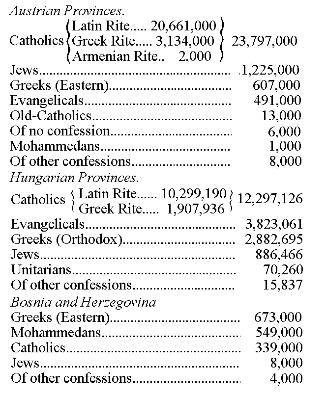

|
| A B C D E F G H I J K L M N O P Q R S T U V W X Y Z |
By this name is designated the European monarchy whose dominions have for their main life-distributing artery the River Danube, in its course from Engelhartszell, near Passau, to Orsova. South of the Danube lie the Austrian Alpine provinces and the provinces of Carinthia and Carnola; north of the Danube are the Carpathian and Sudetic provinces.
The monarchy as a whole has an area of about 262,577 square miles (680,887 square kilometres), and a population of about 48,592,000. This gives it the second place in population, among the political divisions of Europe. The average density of its population is, approximately, 185 to the square mile. The monarchy holds sway over: (a) the kingdoms and provinces represented in the Austrian Parliament, or Reichsrat, which have together an area of 115,695 sq. m. (300,008 sq. km.) and a population of 26,969,812; (b) the provinces of the Hungarian Crown which have a total area of 127,204 sq. m. (329,851 sq. km.) and a population of 19,985,465; (c) Bosnia and Herzegovina, with an area of 19,678 sq. m. (51,028 sq. km.) and a population of 1,737,000, occupied and administered by Austria-Hungary, though still theoretically a part of the Ottoman Empire. These populations include a great variety of races. In the Austrian territory there are: Germans, 9,171,000; Czechs, 5,955,000; Poles, 4,259,000; Ruthenians, 3,376,000; Slovenes, 1,193,000; Italians and Ladinians, 727,000. In Hungary the population is composed of: Magyars, 9,180,000; Rumanians, 2,867,000; Germans, 2,138,000; Slovaks, 2,055,000; Croats, 1,734,000; Serbs, 1,079,000; Ruthenians, 443,000. The inhabitants of Bosnia and Herzegovina are Servo-Croatians.
The capitals of the three main divisions are: Austria: Vienna, with 1,675,000 inhabitants; Hungary, Budapest, with 732,000 inhabitants; Bosnia and Herzegovina, Serajevo, with 38,000 inhabitants. The only strip of coast land in Austria-Hungary lies on the Adriatic and has a length of 1,366 miles (2,200 km.). The countries which border on Austria-Hungary are: Italy, Switzerland, the principality of Liechtenstein, Bavaria, Saxony, Prussia, Russia, Rumania, Servia, Turkey, and Montenegro.
The Austro-Hungarian Monarchy was created by the union of the Germanic, Slavonic, and Hungarian provinces which now lie within its territory. This union took place in 1526. Upon the death of Louis II of Hungary and Bohemia at the battle of Mohács, in that year. Bohemia and Hungary were united to the Austrian possessions of Ferdinand I, of the Hapsburg family. This union was in accordance with the law of succession as well as the result of a free choice. Up to 1536 each of these three divisions of the present empire had its own separate religious history.
The Romans in the time of Augustus took possession of those provinces of the present Austria-Hungary which lie south of the Danube. In the course of time they built roads, founded cities, turned the territory into Roman provinces, and here and there converted the inhabitants to Christianity. The cities of Aquileia and Salona, episcopal sees from the middle of the first century, were centres of Christianity for Noricum and Pannonia. In the year 294 five Christian workmen were thrown from the marble bridges of Sirmium (Mitrowitz) into the Save and drowned. During the persecution of the Christians under the Emperor Diocletian, in 304, the soldier Florianus was thrown into the Ems at Lauriacum (Lorch). The house of Augustinian canons, at St. Florian, in Upper Austria, now stands on the spot where the body of this saint was buried. A tradition gives the same date for the martyrdom of the two bishops Victorinus of Petovia (Pettau in Southern Styria) and Quirinus of Siscia, who met death where the Kulpa empties into the Save. Even at this period Christianity must have had a large number of adherents in these districts, for already an established organization is found here. The bishops of Noricum were under the control of the Patriarch of Aquileia, while Pannonia was subject to the Metropolitan of Sirmium.
The last representative of Christian culture among the Roman inhabitants of the Danube district is St. Severinus. The story of his life, by his pupil Eugippius, is the only written document we have for the history of the Danubian provinces during the last years of the Roman occupation. Severinus settled near the present city of Vienna, built a monastery for himself and his companions, and led so austere a life that even in winter, when the Danube was frozen, he walked up and down over the ice barefoot. His journeys upon the frozen river were errands of consolation to the despairing provincials, who saw themselves threatened on all sides by bands of marauding barbarians. In these journeys Severinus travelled as far as Castra Batava (Passau), and inland from the river up to Juvavum (Salzburg). God had granted him the gift of prophecy. When Odovakar (Odoacer), King of the Heruli, set out on his march against Rome, he came to the saint and asked for his blessing. Severinus spoke prophetically: "Go forward, my son. Today thou art still clad in the worthless skins of animals, but soon shalt thou make gifts from the treasures of Italy." After Odovakar had overthrown the Roman Empire of the West, and had made himself master of Italy, he sent and invited Severinus to ask from him some favour. Severinus only asked the pardon of one who had been condemned to banishment. The Alamannic king, Gibold, also visited him in Castra Batava, and the saint begged as a personal grace that the king cease from ravaging the Roman territory. His usual salutation was "Sit nomen Domini benedictum", corresponding to our "Praise be to Jesus". When Severinus lay dying the sobs of his disciples prevented their praying; he himself began to recite the last psalm, and with the closing words of this psalm, "Omnis spiritus laudet Dominum", he passed away (482). Six years later the Romans withdrew from this region, taking the body of the saint with them, and returned to Italy. Here he was buried with suitable honour in the castle of Luculanum, near Naples.
During the period of migrations which followed the fall of the Roman Empire, Austria was the fighting-ground of the barbaric hordes which poured through it. Vindobona disappeared from the face of the earth; Pannonia was entirely laid waste by the Avars, a people related to the Huns. The same fate befell Styria, Carinthia, and Carniola, desolated by the Slovenes, who now took possession of those provinces. The land lying on the upper Drave has since borne the name of "Pustertal" (from the Slovenic pust, "waste"). The Croats and Serbs seized the country south of the Save. The Croats are the first-born sons of the Church among the Slavs. They were converted about the year 650, by Roman priests. The Bajuvari (Bavarians), a people from the West, spread themselves over the whole of Upper Austria. St. Rupert, Bishop of Worms, baptized the Bavarian duke, Theodo, at Regensburg (Ratisbon) and became the Apostle of the Austrian Bajuvarii. He travelled and preached nearly as far as Lauriacum, settled in Salzburg, and there erected a see and founded the monastery of St. Peter (c. 700). St. Peter's is the oldest Benedictine monastery which has had a continuous existence down to our own times, Monte Cassino having been repeatedly destroyed and deserted. The Benedictine cloister for women, Nonnberg, founded by Rupert's niece Ehrentraut, is also still standing. The Bavarian Duke Tassilo founded the Benedictine monasteries of Mondsee (748) and Kremsmünster (777). The Bishops of Salzburg brought the Christian Faith and German customs to the Slavs. A quarrel broke out, however, between the Carinthians and the Patriarch of Aquileia. Charlemagne raised the Carinthian see of Salzburg to an archbishopric in 798, settled the dispute with Aquileia by making the Drave the dividing line of the two provinces, and in 803 established the border territories known as the Mark of Friuli and the East Mark.
Moravia was won to Christianity by two brothers, Methodius and Constantine, Greek monks from Thessalonica, known in history as the Apostles of the Slavs. Constantine invented the Glagolitic alphabet, translated the Bible into Slavic, and composed the liturgy in that language. But, as Salzburg and Passau had claim to the region in which the brothers worked, complaint was made against them by the German ecclesiastics. Pope Hadrian II, however, authorized the liturgy in the Slavic language. Constantine remained at Rome in a monastery and took the name of Cyril, while Methodius, after many fruitful labours as Archbishop of Pannonia and Moravia, died 6 April, 885, at Vehlehrad, on the River March. The Apostles of the Slavs are now (pursuant to a decree of Leo XIII) commemorated throughout the Catholic Church on the 5th day of July. The Latin Liturgy was reintroduced in Moravia by Swatopluk, the successor of Duke Ratislaus, and soon after his death the Magyars overthrew the empire of Great Moravia (906). When Moravia is again heard of in history (founding of the bishopric of Olmütz, 1063), it is a province of Bohemia.
Christianity was introduced into Bohemia from Moravia. Of the Slavic tribes which at the end of the fifth century controlled the interior of Bohemia and drove the Germans to the outskirts of the country, the Czechs of Prague were the most important division. In A.D. 871 their prince, Borziwoy, and his wife, Ludmilla, consented to receive baptism from St. Methodius. From this time on the history of Bohemia is an account of the struggles between two contending parties, the Christian-Germanic and the National Heathen. At the instigation of the National Heathen party the saintly Duke Wenzel (Wenceslaus) I was murdered by his brother, Boleslaw I. But even Boleslaw had to rule according to the wishes of the Christian-Germanic party, and his son Boleslaw II founded the Bishopric of Prague (973). The new see was placed under the Archbishop of Mainz, and its first bishop was the Saxon Dithmar. His successor, St. Adalbert (Wojtech), met a martyr's death (967) at the hands of the heathen Slavs of Prussia, whom he sought to bring to the truth. The Benedictine Order came into Bohemia with the founding of the monastery of Borevnov by Boleslaw II, and Boleslaw's sister, Milada, was the first abbess of St. George, the Benedictine cloister for women in Prague. Duke Bretislaw seized Gnesen and brought the body of St. Adalbert in triumph to Prague. Dabrowka, the daughter of Boleslaw I, married the Polish Duke Mieczyslaw, and the latter was baptized in 966. The son of Mieczyslaw laid the foundation of an enduring church-organization by forming the four bishoprics of Posen, Kolberg, Breslau, and Cracow, and placing them under the Archbishopric of Gnesen, which had been established in the year 1000.
The Magyars, a people from the Ural-Altai region, moved forward in 895 into the Avarian Wilderness on the Theiss. Attempts to convert them were made by the court of Byzantium as well as by St. Wolfgang, a monk of Maria Einsiedeln, by Piligrim, Bishop of Passau, who, as successor of the Bishops of Lorch, wished to be Metropolitan of all Pannonia, and by Adalbert of Prague. Thus it was brought about that the Magyar ruler Géza, great grandson of Arpad, and his wife Sarolta were favourably inclined to Christianity. The real Apostle of the Magyars, however, was Géza's great son, St. Stephen. Stephen received a Christian education and was baptized by St. Adalbert. Upon the occasion of his marriage with Gisela, sister of the future emperor, St. Henry II, Stephen vowed to give his people the blessings of Christianity. One of the most important measures taken by him for the security of the new faith was the founding at Gran of an archbishopric with ten subordinate sees. As Stephen's patron saint in battle had been St. Martin, he founded the Benedictine monastery of Martinsberg. He also founded hospices for the reception of Hungarian pilgrims at Ravenna, Rome, and Jerusalem. Astriens, the Abbot of Martinsberg, obtained for him, from the pope, the title of king. Sylvester II sent Stephen a crown of gold and, according to a tradition (which, however, is not well founded) a Bull which decreed to the Kings of Hungary the privilege of the "Apostolic Majesty". Having a great devotion to the Blessed Virgin, Stephen caused himself to be crowned on the festival of the Assumption, the 15th day of August, in the year 1000, and church historians have given to Hungary the title of "Mary's Realm" (Regnum Marianum).
The gradual advance of Christianity in Austria towards the east is shown in the shifting of the abode of the early rulers of the Babenberg (Bamberg) line from Melk, on the Kahlenberg, to Vienna. One of this family, Leopold I, the Illustrious, had already founded at Melk an establishment of secular canons. These were replaced in 1089 by twelve Benedictine monks from Lambach. At the time when Leopold's youngest son, Adalbert I, the Victorious, was margrave, three youths left this region to go to Paris to study. While on their way, they were obliged to spend a night in the open and fell to speaking of the future. Each wished to become a bishop, and each vowed that, if ever a bishop, he would found a monastery. One, Gebhard, became Archbishop of Salzburg and founded Admont and the Diocese of Gurk; another, Adalbero, Bishop of Würzburg, founded the monastery of Lambach; while the third, St. Altmann of Passau, founded Göttweig for twelve canons under the Rule of St. Augustine. The canons at Göttweig were replaced after the lapse of ten years by Benedictines from St. Blasien in the Black Forest. All three of these bishops remained true to Gregory VII in the controversy of investitures. The Crusades began during the reign of the Margrave Leopold II, the Saint, and many of the crusading armies traversed Austria. Leopold's mother, Ida, took part in a pilgrimage of which Thieno, Archbishop of Salzburg, was the leader. The archbishop met the death of a martyr, and Ida was made a prisoner. Leopold erected a church on the Kahlenberg and founded the monasteries Klosterneuburg and Heiligenkreuz. His wife, Agnes, widow of the Hohenstaufen Duke Frederick, bore him eighteen children. Their third son, Otto, studied at Paris, entered the Cistercian monastery of Morimond, became Bishop of Freising, and wrote a chronicle, "De Duabus Civitatibus", and a second work, "Libri Duo de Gestis Friderici I". By reason of these two works he is the most noted German historian of the Middle Ages.
After a hard struggle, the saintly King Ladislaus (d. 1095) succeeded in regulating the ecclesiastical and civil affairs of Hungary. He founded the Bishopric of Grosswardein, and summoned the dignitaries of the Church and the State to a diet at Szabolcs. This diet is often called a synod, on account of the many decisions arrived at in church matters. The priests were ordered to observe celibacy strictly, the laity were commanded to keep Sunday and feastdays and to abstain from immorality. Ladislaus conquered Croatia, whose duke, Zwonimir, had received from a legate of Gregory VII at Salona (1076) a banner, sword, crown, and sceptre, with the title of king, in return for which he had sworn fealty to the pope.
Henry II, Jasomirgott, was the first Duke of Austria. He built a residence for himself at Vienna (Am Hof), in which was the Pancraz chapel, and founded the Schottenkloster for Benedictine monks from St. Jacob's at Regensburg. Octavian Wolzner, an architect from Cracow, erected for the new duke the church of St. Stephen, to which the parish of St. Peter was added. Leopold V, the Virtuous, son of Henry II, took part in the Third Crusade and fought so bravely that, as we are told, his armour was stained blood red, and only the part under the sword belt remained white. However, Richard the Lionhearted tore down the Austrian banner at the storming of Ascalon and the enraged duke went home at once. While on his way to England, Richard was seized at Erdberg, and held a prisoner by the duke at Dürrenstein. Crusaders being under the protection of the pope, Celestine III put Leopold V under the ban. To this the duke paid no attention; but when he fell with his horse, at Graz, broke a leg, and found himself near death, his conscience smote him; he sent for Albert III, Archbishop of Salzburg, who was in the neighbourhood, and received absolution from him. Frederick I, the eldest son of Leopold V, ruled only six years and died while on a crusade. The reign of his brother, Leopold VI, the Glorious, was a brilliant one. He too went on a crusade and endeavoured first to capture Damietta, the key to Jerusalem, but was obliged to return home without having accomplished anything. He married a Byzantine princess and formed relations with men of Greek learning and culture. The duke built a new castle for himself (Schweizerhof) and the church of St. Michael. The church was intended for the benefit of the duke's attendants, retainers, servants, and the townspeople who settled around the castle. The scheme to form a bishopric at Vienna was not carried out, but Eberhard II of Salzburg founded bishoprics at Seckau and Lavant, for Styria and Carinthia. Leopold's son and successor, Frederick II, the last of the Babenberg line, was knighted with much religious pomp at the feast of the Purification of the Virgin, 1232, in the castle church. Bishop Gebhard of Passau celebrated Mass and gave the consecrated sword to the duke, two hundred young nobles receiving knighthood at the same time. After the ceremony the young duke rode at the head of the newly made knights to Penzing, where jousts were held.
Within a short space of time the national dynasties of the countries under discussion died out in the male lines: the Babenberg Dynasty (Austria) in 1246, the Arpadian (Hungary) in 1301, and the Premyslian (Bohemia) in 1306. In 1282 the German Emperor, Rudolph of Hapsburg, gave Austria in fief to his son Albrecht. To Austria and Styria the dukes of the Hapsburg line soon added Carinthia, Carniola, the Tyrol, and the Mark of the Wends. The rulers of this line are deserving of great praise for their aid in developing church life in these territories. Albrecht I founded the court (Hofburg) chapel in his castle; Duke Rudolph IV in 1359 laid the corner-stone of the Gothic reconstruction of the church of St. Stephen. A hundred and fifty years elapsed before the great tower of the church was completed. With the consent of the pope the same duke founded the University of Vienna in 1365. The university was modelled on the one at Paris and possessed great privileges (freedom from taxation, right of administering justice). When part of the Council of Basle separated from Eugenius IV and set up Felix V as antipope, the theological faculty of the university, of which at that time the celebrated Thomas Ebendorffer of Haselbach was a member, sided with the antipope. But the papal legate, John Carvajal, and Æneas Sylvius Piccolomini, the emperor's governmental secretary, prevailed upon Frederick III to espouse the cause of Eugenius and to sign the Concordat of Vienna (1448). The concordat provided that the annates and the confirmation dues should be restored to the pope, that the pope should have the right to appoint to the canonries in the uneven months, and that the filling of ecclesiastical vacancies at Rome should be reserved to him. The concordat was gradually accepted by all of the German rulers, and up to the present time the relations between the German Church and the papacy are regulated by its provisions. In 1452 Frederick was crowned emperor at Rome, being the last emperor to be crowned in that city. In his reign the Bishoprics of Laibach (1462), Vienna, and Wiener-Neustadt (both the latter in 1469) were founded. During this period a great many monastic houses were founded in Austria, especially by the more recently established orders: Carthusian houses were founded at Mauerbach, Gaming, Agsbach; Franciscan at Vienna, Klosterneuburg, St. Pölten, Maria Enzersdorf, Pupping; Dominican at Graz and Retz.
Under the Luxembourg line Bohemia attained a high degree of material and spiritual prosperity. Charles IV, before his reign began, succeeded in having Prague raised to an archbishopric (1344), and in this way made the country ecclesiastically independent of Germany. Charles had been a student at Paris, and immediately upon ascending the throne he founded the University of Prague (1348), the first university on German soil. Master Matthias of Anras and Peter Parler from Schwäbisch-Gmund began the erection of the stately Cathedral of St. Vitus which is now nearing completion. Parlor also erected the Teynkirche (Teyn church) in Prague, and the church of St. Barbara in Kutzenberg, while Matthias of Anras built the fortress-castle of Karlstein. The crown jewels of Bohemia were preserved in the sumptuous chapel at Karlstein. But Bohemia had a sudden fall from the height it had attained. King Wenzel (Wenceslaus), son of Charles IV, had no control of his temper, and began a quarrel with the archbishop. The archbishop's vicar-general, John of Pomuk (St. John Nepomucene), refused to tell what he had heard in confession. He was first tortured and then, gagged and bound, was thrown at night into the River Moldau. At this time the first signs appeared in Bohemia of a religious agitation which was destined to bring the greatest sorrow both to Bohemia and to the adjoining countries. Jerome of Prague had become acquainted with the writings of Wyclif at Oxford. He returned home, bringing the teachings of Wyclif with him, and communicated them to his friend Hus. Hus came from Husinetz near Prachatitz. He was the child of a peasant, and had become professor of philosophy at the University of Prague, preacher in the Bohemian language at the Bethlehem chapel, and confessor to Queen Sophia. A complaint was brought in the university against Hus on account of his teaching. Of the four "Nations" (Saxons, Bavarians, Poles, and Bohemians), which had votes in the affairs of the university, only the Bohemians voted for Hus. Hus then turned a personal into a national affair. King Wenzel issued a command that henceforth the Bohemians should have three votes, and the other "Nations" only one vote. Upon this 5,000 students and the German professors withdrew and founded the University of Leipzig. The university was now simply a national one, and Hus without interference taught the following doctrines: the church consists only of the elect; no man is temporal ruler, no man is a bishop, if he be in mortal sin; the papal dignity is an outcome of the imperial power; obedience to the church is the invention of men. Hus was suspended by Archbishop Zbinko; he appealed to the pope (Alexander V) and then to Jesus Christ. John XXIII placed Hus under the ban, Prague under an interdict, and called the Council of Constance. The Emperor Sigismund gave Hus a safe-conduct which protected him from acts of violence on the part of the indignant Germans through whose territory he must pass, but not from the verdict of the council. Hus was repeatedly examined before the council, but would not retract his opinions; the members of the council, therefore, unanimously condemned his errors and delivered him to the secular power, by which, in accordance with the law of the land at the time, he was condemned to death at the stake (1415). Jerome of Prague suffered the same death the next year. While at Constance Hus sanctioned the receiving of the sacrament in both kinds which had been introduced by Master Jacob of Miez (Calixtines). As a former monk, John of Selau, was leading a procession a stone was thrown at him from a window of the town hall. The throng, led by the knight John Zizka of Trocnov, attacked the town hall and threw the judge, the burgomaster, and several members of the town council out of the window into the street, where they were killed by the fall. This is known in history as the "First Defenestration of Prague". King Wenzel was so excited by the episode that he was struck with apoplexy and died. The Hussite wars caused fearful devastation not only in Bohemia, but in the adjacent countries as well. Fortunately, the Hussites divided into the more moderate Calixtines, under John of Rokyzana, and the "Taborites", so called from the city and mountain which they named Tabor. The Taborites were led by John Zizka and Procopius the Great, who was also called the "Shaven" (Iloly) because he had been a monk. After Zizka's death the extreme radicals took the name of "Orphans" because no one was worthy to take Zizka's place. They were finally conquered, and an agreement, called the Compactata (Treaty of Iglau) based on the Four Articles of Prague, was made with the moderate party (1436). The Compacta provided: that in Bohemia everyone who demanded it should receive Holy Communmion under both kinds; mortal sins should be punished, but only by legal authorities; the Word of God should be freely expounded by clergy appointed for the purpose; ecclesiastics should manage their property according to the rules of the church. After this, Hussitism lived on in the "Bohemian Brethren", who elected a bishop at Lhota near Reichenau (1467), and were finally carried into the current of the Reformation.
In Hungary Christian culture flourished during the reign of the House of Anjou. Louis the Great founded universities at Altofen and Funfkirchen, and built the fine cathedral at Kaschau. When Constantinople was captured by the Turks (29 May, 1453), a cry of horror resounded throughout Europe, and the pope sent forth John Capistran to preach a crusade. The saintly monk came with an immense following from Italy to Germany, Bohemia, and Hungary. He preached in the open, as the churches could not hold his hearers. A stone pulpit with a statue of the saintly Capistran stands on the east side of St. Stephen's Cathedral, Vienna. A hundred thousand people crowded the square and the roofs of the houses to hear him. This was the more remarkable because Capistran preached in Latin. Yet all who saw and heard him were moved to their innermost souls. The Turks, in 1456, tried to capture Belgrad, the key to Hungary. The papal legate, John Carvajal, and John Capistran raised a crusading army with which John Hunyady was able to defeat, at Belgrad, a Turkish army much more numerous. This was called the "Battle of the Three Johns". Hunyady and Capistran died shortly afterwards from camp fever. Hunyady's son had been educated by John Vitez, Bishop of Grosswardein, afterwards Archbishop of Gran. This prelate instilled such a love of learning into his pupil that when the latter ascended the throne as Matthias Corvinus, he gathered learned men about him, re-established the decayed university at Ofen, and founded a new university at Pressburg. Thirty copyists were kept busy at Ofen transcribing the Greek and Latin classics. The volumes, which were beautifully illuminated anbd handsomely bound, were known as Corvinian books.
If in analyzing church history Christian antiquity is taken to represent the period of the life and labours fo the Church among the peoples influenced by Greek and Roman civilization, and the Middle Ages the period of the Church's life and labours among the Germans and the nations which came into contact with them, then the modern period of history must be taken as that in which the influence of the Church began to extend throughout the whole world. Modern times would, according to this theory, begin with the discovery of the New World. But if the beginning of the modern era is made, as it usually is, to coincide with the Reformation, then it is further marked by the rise of that monarchy which was formed by the union of the Austrian, Slavonian, and Hungarian provinces under the Hapsburgs in 1526.
Ferdinand of Hapsburg, the ruler of the German-Austrian crown provinces, had married, at Linz, Anna of Hungary and Bohemia. When Anna's brother, Louis II, was killed in the desperate battle of Mohács (1526), Ferdinand of Austria succeeded by right of inheritance and election as King of Bohemia and Hungary. The new doctrine taught at Wittenberg was soon brought into the Austrian provinces. Miners were the first to spread the new teaching. Noble families frequently sent their sons to German universities, and even to Wittenberg, and these students often returned with Protestant ideas, and even brought Protestant preachers with them. The constant danger from the Turks in Austria was exceedingly opportune for the new religious movement. One of the first preachers of the new doctrine in Vienna was Paul of Spretten (Speratus), a Swabian, who had been driven out of Salzburg on account of his Lutheran views. The new doctrine entered Hungary and Transylvania through merchants who brought Lutheran books with them, and it took hold, more especially, among the German population of the Zipser region and among the Saxons of Transylvania. Mátyás Biro, known as Devay, from the place of his origin, Deva in Transylvania, has been called "the Luther of Hungary". Most of the Hungarian bishops had fallen at the battle of Mohács, and the subsequent disputes concerning the succession to the throne distracted the monarchy. For these reasons the new doctrines spread rapidly, and Devay was able to bring over to it such noble families as the Batthyany and Bocskay. It was then that Calvinism began to be called in Hungary Magyar hit (Hungarian faith), Lutheranism Nemes hit (German faith), and Catholicism Igaz hit (Right faith). Equal success accompanied the preaching of John Gross of Cronstadt in Transylvania, despite the efforts of Georgy Utyeszenich to check him. Utyeszenich (also called, after his mother, Marinuzzi) was prior of the Pauline monastery at Szenstochov near Cracow, and governed Transylvania as guardian of John Sigismund Zápolyas. Gross added Honter to his name in memory of his deliverance by an elder bush (in the Transylvanian dialect hontert) from death by drowning. In order to secure the crown for her son, John Sigismund Zápolyas, his mother, Isabella, was obliged to sanction the decisions of the diet which met at Thorenburg (Torda) near Klausenburg. These granted to adherents of the Augsburg Confession equal rights with the Catholics. In Bohemia and Moravia Lutheranism first found adherents among the Germans and especially among the sect of the Utraquists. Just as the Hapsburg Dynasty showed itself at this period to be the shield of Christianity against the advance of Islam, so also it proved itself by its constancy and zeal to be the support of the Faith against the religious innovations. Pope Pius IV conceded the cup to the laity in the Archdioceses of Gran and Prague, a concession, however, withdrawn by St. Pius V. Ferdinand I sought in many ways to be of aid: by his mandates, by the inspection of convents and parishes, by his care in selecting competent ecclesiastics, by the introduction of the newly established Society of Jesus, and by proposals which were sent to the Council of Trent in support of reforms. The mandates of Ferdinand were of little use, but the inspections and the enforcement of the decisions of the Council of Trent had effect. The Bishops of Vienna, Fabri (Heigerlein), and Frederick Nausea (a Latinization of Gran; Nausia, horror, disgust) were unusual men. With unflagging zeal both preached on Sundays and feast days in the Cathedral of St. Stephen and took part in the religious movement by the publication of theological pamphlets. Nausea's sermons are characterized in a rude rhyme of the day:—
Viel tausend Menschen standen da Es predigt Bischof Nausea, Wie er denn pflegt zu aller Zeit Sein' Schäflein zgebn selbst die Weid.
"Many thousands gather where Bishop Nausea preaches, and himself, as his wont is, feeds his flock".—In the Austrian provinces the Jesuits were the most important factor in the defence of the Faith and the elevation of Christian life. Ferdinand I obtained from St. Ignatius the founding of a Jesuit college in Vienna. The first two Jesuits came to Vienna in 1551. They were followed, the next year, by St. Peter Canisius, the first German member of the order, were assigned the abandoned Carmelite monastery Am Hof, obtained two chairs in the theological faculty, and founded a gymnasium with a theological seminary attached. St. Peter Canisius was named court preacher, and for a time was administrator of the Diocese of Vienna. He still influences the present day through his "Summa Doctrinæ Christianæ"; an abridgment of which, called the catechism of Canisius, is still in use. A few year later the Jesuits founded at Prague a gymnasium, a theological school, and a university for philosophical and theological studies, which in contradistinction to the "Carolinum" was called the "Clementinum". They also founded schools at Innsbruck and at Tyrnau. The tutor and court preacher of Maximilian II, Ferdinand's eldest son, was Sebastian Pfauser, a man of Protestant tendencies. It was feared that Maximilian would embrace the new creed, but the papal nuncio, Bishop Hosius of Ermland, pointed out to him those inconsistencies in the Protestant doctrine which prove its falsity. Maximilian II gave permission to lords and knights to follow the Augsburg Confession in their own castles, cities, and villages. David Chytræus of Rostock drew up for the Protestants a form of church service. In Bohemia the Evangelicals united with the Bohemian and Moravian Brethren, and called the new agreement the "Bohemian Confession". They had a consistory of fifteen to which the Evangelical clergy were subordinate. Maximilian's position in the part of Hungary controlled by them was a difficult one, because rebels concealed their political schemes under the cloak of a struggle for religious freedom. His brother Charles was master of the inner Austrian provinces, Styria, Carinthia, Carniola, and Görz. He summoned the Jesuits to Graz and, in the religious pacification of Brück, granted the free exercise of religion at Graz, Klagenfurt, Laibach, and Judenburg. In return he demanded that the Protestants should leave him and his coreligionists undisturbed in their faith, rights, and estates; besides this the Lutheran preachers and teachers were obliged to leave the cities, market towns, and estates under the personal rule of the archduke. In order to counterbalance the endowed schools of the Styrian provinces the Archduke Charles founded the University of Graz (Carolina) in 1586. Charles's son Ferdinand (later the Emperor Ferdinand II) was educated at Ingolstadt, and while there he declared, "I would rather give up land and people and go away in nothing but a shirt than sanction what might be injurious to religion". When he became ruler he appointed commissioners who cleared the land of these preachers (ranters). The bishops George Stobäus of Lavant and Martin Brenner of Seckau (the Hammer of the Heretics) were at the head of these reformatory commissions. But no blood was shed in this counter-reformation.
At the distribution of provinces Archduke Ferdinand, husband of Philippina Welser, had received the Tyrol. The diet of 1570 decided the religious position of that province. The governor, Jacob of Pagrsbach, declared firmly that to grant the wishes of the Protestants would be contrary to the customs and ordinances of the land and, further, that it would be folly to rend religion, the strongest tie which binds hearts together. All classes agreed with him. Rudolph II, Maximilian's eldest son and successor, lived in the Hradschin at Prague, where he carried on his studies in alchemy and art. The Archduchy of Austria was ruled by his brother Ernst. Ernst was aided by Melchior Khlesl, who brought about the counter-reformation in Austria. Khlesl was the child of Protestant parents; his father had been a baker in Vienna. He was converted by the court preacher, George Scherer. From the time of Scherer until the suspension of the order the court preachers were chosen in unbroken succession from the Jesuits. Khlesl became Provost of St. Stephen's, Chancellor of the university, and Bishop of Vienna. During the reigns of Ernst and his brother Matthias, Khlesl was all powerful. Rudolph II having shut himself up in Prague, the members of the Hapsburg family chose the Archduke Matthias to be their head. The Bohemians held to Rudolph II, but wrung from him a rescript (Majestätsbrief) in 1609. This confirmed the Bohemian Confession, granted the Protestants permission to use the university, and gave them the right to choose a consistory; it also allowed them three temporal estates of lords, knights, and cities having chartered rights to build Protestant churches and schools. Contrary to the provisions of this agreement, subjects of the Archbishop of Prague built a Protestant church at Klostergrab, and subjects of the Abbot of Braunau did the same at Braunau. The bishops ordered these to be closed, and when the Emperor Matthias supported them the result was (1620) the "Second Defenestration of Prague" with which the Thirty Years War began. The Elector Palatine Frederick V, the head of the Protestant League and of the German Calvinists, was elected King of Bohemia. The cathedral was altered to suit Calvinistic church services. The altars were demolished, the pictures destroyed, and Scultetus, the court preacher, arranged a church service. No ruler ever began to reign under more distressing conditions than Ferdinand II. The insurgents under Thurn stood before the gates of Vienna; those unfriendly to Catholicism within the city made common cause with the enemy. Ferdinand, however, never lost courage. Khlesl, Bishop of Vienna, proved to be too weak and was therefore confined first in the castle of Ambras and then in the castle of Sant' Angelo at Rome. He lived to have the satisfaction of being restored in state to his diocese. He founded in Vienna the Himmelspfortkloster, which commemorates the beautiful legend of the truant nun whose place as doorkeeper was taken during her absence by the Blessed Virgin.
After the battle of the White Mountain, Ferdinand took severe measures against the disturbers of the peace; they were driven out of the country, and finally the rescript, which had been the source of so much trouble, was annulled. A new constitution was published which, among other provisions, made the clergy the highest estate of the land. The emperor was obliged to give Upper Austria in pledge to Bavaria as security for the cost of the war. The cruelties of the Bavarian troops and Ferdinand's order, requiring the people either to leave the country or to return to the old belief, led to a peasant revolt under the leadership of Stephen Fadinger, the proprietor of a farm not far from St. Agatha, which was carried on until Fadinger died of a wound at Linz. The Catholic was now again the dominant religion and the Protestants retired into the little-frequented mountain districts. In Hungary te Government could not accomplish so much. However, Peter Pázmán laboured with success against the spread of the new religious doctrines. Pázmán was born at Grosswardein (Nagy Várad) of Calvinistic parents. At sixteen he changed his creed, then entered the Society of Jesus and studied at Cracow, Vienna, and Rome. At Rome Bellarmine and Vasquez were among his teachers. When professor at Graz he published the "Imitatio Christi". He finally returned to Hungary, became Primate, and gained great influence for the Church through his eloquence, the gentleness of his character, and his strong patriotic feeling. He brought about the return of fifty noble families to the mother church and was the author of a "Guide to Catholic Truth". He founded at Tyrnau a university which was later transferred to Budapest, and also the Hungarian College at Rome. Believing that the preservation of religion requires worthy servants he founded at Vienna, 1623, a college (Pazmaneum) for the training and instruction of clergy for all the dioceses of Hungary. Ferdinand II called Pázmán his friend. This emperor raised the bishops of Vienna to the rank of prince-bishops (1631). When this terrible religious war came to an end in the Peace of Westphalia, and the diplomats played with religious establishments and monasteries as boys play with nuts, and invented the term "secularization" to express the secular appropriation of the Church's estates, the Hapsburg princes were not willing to commit Austria to such a policy. At this crisis the Hapsburg Dynasty obeyed the directions of Providence. Had the house of Hapsburg then come forward as champions of the new doctrine which originated at Wittenberg, it would have been easy to renew the shattered imperial power in Germany and give to the crown of the Holy Roman Empire a lustre far exceeding that of any other European diadem. But reverence for God and Holy Church had greater weight with the emperors of this line than worldly advantage. For one hundred and twenty years they battled with the storms which the so-called Reformation had stirred up, while the armies of Islam attacked Vienna and the edge of the Ottoman Empire was pushed forward as far as Raab. Even when Louis XIV forced his way in from the West, bringing calamity in his train, and the war cry of the Osmanli was heard within the imperial citadel, the rulers of Austria still trusted in God. Innocent XI sent subsidies, and the saintly Father Marco D'Aviano aroused Christian enthusiasm by preaching a crusade. The feast of the Holy Name of Mary is a reminder that on the 12th of September, 1683, the power of Islam was forever broken before the walls of Vienna, and that the inheritance of St. Stephen was then freed from the Turkish yoke. God sent the rulers of Austria to do His work, and that they did it is an honour exceeding that of the quickly fading garlands which victory twines about the victor's chariot. During this period the Piarist and Ursuline orders were active in the work of education. New bishoprics were founded at Leitmeritz (1656) and Königgrätz (1664). Charles VI raised Vienna in 1722 to an archbishopric. While France at this time pointed with pride and reverence to its famous divines, the great preacher of Vienna was the always clever, but often eccentric, Augustinian, Father Abraham a Sanctâ Clarâ, whose family name was Ulrich Megerle. For example, preaching on the feast of the conversion of St. Paul (Pauli), he announced as his theme Gauli, Mauli, and Fauli. Gauli he interpreted to mean pride and sensuality (Gaul, "horse"); Mauli, gluttony, drunkenness, and wrangling (Maul, "mouth"); Fauli, indolence (faul, "lazy").
The fifty years preceeding the French Revolution are known in history as the period of the "Enlightenment". The Rationalist writers of this period believed that by enlightenment, in their sense of the word, a cure could be found for the evils of the time, and a means of promoting the happiness of mankind. Men were led more and more away from the influence of the Church, the loftier aspirations of noble and pious souls were scorned, and only the claims of a refined sensuality deemed worthy of consideration. The new ideas made their way into Austria, and that country became the birthplace of Josephinism, so called from the Emperor Joseph II, whose policy and legislation embodied these ideas. Maria Theresa forbade the sale of the book written by Febronius, but soon its sale to the learned and discreet was permitted. Urged by her council, Maria Theresa issued the "Placitum regium", made a stole-tax ordinance and obtained from Benedict XIV a reduction of the feast days. By this last regulation all the Apostles are commemorated on the feast of Sts. Peter and Paul, and all the martyrs in the Mass and Breviary on the feast of St. Stephen. The empress also abolished the convent prisons, and ordered that passages in the Breviary lessons for the feast of St. Gregory VII which are opposed to the increase of the secular power should be covered over with paper. She also put a stop to public excommunications and public penances. The last public penance (1769) was that of a merchant at Pyrawart in Lower Austria who had struck an ecclesiastic. He stood for an hour at the church door holding a black candle. When Clement XIV suppressed the Society of Jesus, the Archbishop of Vienna, Cardinal Migazzi, sought to save that order in Austria. "If the members of the order should be scattered, it would not be easy to fill their places; it would cost much expense and time to bring conditions back to the point at which these priests had left their work if they were forced to abandon it." Just twenty years later Migazzi begged the Emperor Francis II to reestablish the order. "I can prove to Your Majesty", he said, "that even the late French ambassador, who was certainly an unprejudiced witness, did not hesitate to say that but for the suppression of the Jesuits France would never have suffered from the Revolution, which brought such terrible results in its train. Three months before the death of Your Majesty's grandmother I heard her say, 'Oh, if I had only followed your advice and had availed myself of your statements!'" After the suppression of the Jesuits their property was converted into a fund for the aid of students, and the whole system of education was remodelled from top to bottom. Rautenstrauch, Abbot of Braunau, drew up a new scheme for a theological course, in which there should be "no squabbles of schools and scholastic chaos". Father Gratian Marx, of the Congregation of the Pious Schools, planned a Realgymnasium (high school without Greek) with six classes, which proved very successful. The common schools, which Maria Theresa had called a political necessity, were reorganized by Abbot John Ignaz Felbiger of Sagen in Prussian Silesia, each parish being given a primary school, each district a high school, and the capital of each province a normal school with which an institute for training teachers was connected. Felbiger wrote the necessary school books. The school at Kaplitz in southern Bohemia, under the supervision of the parish priest, Ferdinand Kindermann, was noted as a model school.
In ten years Joseph II published 6,200 laws court regulations, and ordinances. Even those measures which were good and appropriate in themselves generally bore the evidences of precipitancy. His very first ordinances were directed against the government of the Catholic Church and aroused discontent by their interference with the affairs of the Church. The acceptance of papal decrees without the sanction of the Government was forbidden. The bishops were forbidden to apply for, or make use of, the quinquennial faculties of the Holy See, on the ground that they had full authority to act for themselves. On the other hand, they were not allowed to issue pastoral letters or instructions without the sanction of the Government. The Government soon began to close those monasteries which were not occupied with the spiritual care of a community, teaching, or nursing, and all the brotherhoods were suspended. About 738 religious houses were closed; 13 in Vienna alone; 51 in Lower Austria. The property of these conventual institutions was turned into a fund for church expenses, which was to be administered by the several provinces. In Lower Auistria alone 231 new parishes were formed. Much discontent was caused by the appointment of an "ecclesiastical court commission" which issued a number of arbitrary regulations concerning public worship; only one Mass was to be celebrated in a church, and that at the high altar; in parish churches, during the seasons of fasting, only two fast-day sermons, on Wednesday and Friday, must be preached; afternoon devotions, the Litany of Loretto, and the Rosary were forbidden; a requiem might be celebrated in a parish church upon the occasion of a death, but not upon the anniversary; it was forbidden to expose the Blessed Sacrament in a monstrance, the ciborium must be used instead; only when the Host was displayed could more than six candles be placed on the altar. A special regulation forbade the dressing of statues of the Virgin and ordered that the bodies of the dead should be buried in sacks and covered with quicklime. Further ordinances forbade the illumination and ornamentation of sacred pictures, the exhibition of relics, and pilgrimages. The Edict of Toleration (1781) granted the private exercise of their religion to Lutherans and Calvinists. The marriage law of 1783 runs: "Marriage in itself is regarded as a purely civil contract. Both this contract and the privileges and obligations arising from it are entirely dependent for their character and force on the secular laws of the land." In 1783, also, all schools, episcopal and monastic, for the training of the clergy were abolished, and general seminaries were founded at Vienna, Budapest, Pavia, and Louvain, with branches at Graz, Olmütz, Prague, Innsbruck, Freiburg, and Pressburg. This measure was intended to check the influence of the bishops in the training of ecclesiastics, and to obtain devoted servants of the State. The Minister of State, Van Swieten, took care that the new schools were supplied with suitable teachers and superintendents.
The first lodge of Freemasons, "Zu den drei Kanonen", was formed at Vienna in 1742; a lodge called "Zu den gekrönten Sternen und zur Redlichkeit" was formed soon after at Prague. Joseph II, however, had no alliance with Freemasons. "I know little about their secrets", he said, "as I never had the curiosity to take part in their mummeries". Still, his words, "The Freemason societies increase and are now to be found in the smallest cities", show the rapid growth of the order. Although many of the representatives of the Church failed to meet the new tendencies with force and courage, the Prince-Archbishop of Vienna, Cardinal Migazzi, attacked them boldly. He wrote vigorously and defended the Church with energy. He was well supported by the Primate of Hungary, Count Joseph Batthyányi, and in the lower provinces by the Cardinal Count von Frankenberg. But their efforts were in vain; the movement continued to grow. In this condition of affairs Pius VI felt it necessary to take some action, and he resolved to visit Vienna. This visit (1782) was very opportune for the emperor and the leaders of the new tendency in the empire. Hybel issued the libellous pamphlet, "Was ist der Papst?" The value of the pamphlet literature of the Josephinist movement is not in proportion to its amount. The roads traversed by the papal cortège were lined with the faithful who were eager to obtain the blessing of the Holy Father. The emperor met the pope at Wiener-Neustadt, and on the 22d of March the two heads of the Christian world entered the imperial city. The emperor showed the pope every attention, but his chancellor of state, Prince Kaunitz, was less considerate. At Easter the pope celebrated High Mass in the church of St. Stephen and afterwards blessed, from the balcony of the church facing Am Hof, the vast throng which filled the square. But the object of the pope's visit was gained only in part, although it may be said that the Josephinist fanaticism began to give place to a more sober mood. When the Holy Father left Vienna, 22 April, after a stay of just one month, the emperor accompanied him as far as Mariabrunn. Here, after praying in the church, the two parted. The next year the emperor visited Rome, where the Spanish ambassador, Azara, and Cardinal Bernis are said to have had a moderating effect upon him. There was no break with the Curia.
One work of lasting value which this emperor undertook was in connexion with diocesan boundaries. He took from the Diocese of Passau that part which lies in Austria and formed with it the See of Linz; the episcopal residence was transferred from Wiener-Neustadt to St. Polten, Bregenz was made the seat of a vicar-general, and a bishopric was founded at Leoben. The worst blunder committed by Joseph II in his latter years was his obstinate adherence, in spite of the warnings of Cardinal Frankenberg, to the scheme of erecting a general seminary at Louvain. Van Swieten put Stöger in charge of it. Stöger was one of the few Catholic priests who had committed themselves unreservedly to the "Enlightenment" movement. Maria Theresa had dismissed him from his position as teacher of church history, and his opinions were to be found in print in his compendium of church history. The career of Aurelius Fessler is a still more distressing example of the influence of the new spirit. Fessler was born in Hungary and came to Vienna as a Capuchin monk. There he became acquainted with Eybel, and as an offset to Eybel's "Was ist der Papst?" issued "Was ist der Kaiser?" Appointed professor of theology at Lemberg, he entered the Freemason lodge "Phönix zur runden Tafel", but was soon obliged to leave Lemberg "on account of debt and frivolous demeanour unsuited to his calling". He became a Lutheran, established himself in Berlin as legal counsellor in ecclesiastical and school cases, got a divorce in order to marry again, and accepted a professorship in the academy at St. Petersburg. His "Reminischeces of My Seventy Years' Pilgrimage" presents a melancholy picture of long and weary wanderings.
Although the reforms of Joseph II were well-intentioned, yet the independence of the Church suffered detriment through them. His enactments were drafted by Austrian canonists without any previous understanding with the authorities of the Church, and in violation of her rights (jus circa sacra). In many instances the tender germs of religion were killed, and a careless, frivolous way of thinking resulted.
Leopold II, the successor of Joseph II, entered Vienna, 12 March, 1790, and on the 21st of the same month Cardinal Migazzi presented a memorial concerning the painful position of the Austrian Church. As a result, the bishops received an intimation that they were at liberty to point out any serious defects in the existing ecclesiastical conditions. This they did, but, more especially, Cardinal Migazzi enumerated "thirteen grievances and their remedies" in his memorandum. Among these grievances were "the lack of monastic discipline, the general seminaries, the marriage laws and the Ecclesiastical Commission which had assumed to be the judge of the bishops and their rights". Leopold II virtually suspended the general seminaries, permitted the bishops to have seminaries under their own control, and granted to the monasteries the right to give theological courses. Religious processions were permitted "to a point not far distant" and Saturday evening devotions were also allowed (without Benediction, however), as well as the exposition of relics.
Francis II was a devout and conscientious Christian, and a ruler who wished to be a father to his people. Nevertheless, it was during his reign that what is called the Josephinist system struck firmer roots. In the first place, the struggle with France, which lasted over twenty years, demanded all the energies of the Government, and during this reign both clergy and people grew more accustomed to the Josephinist regulations. But in addition to this Francis II clung with a childlike devotion to the memory of his uncle Joseph II, whom he called his second father. And, furthermore, whenever any concession was made to the Church, the supporters of Josephinism raised an outcry. In 1793, for instance, the Government was informed that in the church of St. Stephen Mass was celebrated simultaneously at several altars, and that in several places, at the afternoon litanies, Benediction was given with the monstrance. A priest had been the informant. After repeated conferences the cardinal obtained permission to have two Masses said at the same time in the church of St. Stephen, but "the Benediction could be given only once at the close of the service". The almost insurmountable difficulty in the way of reform was the ecclesiastical court commission. It was the only means of communication between a bishop and the emperor. Migazzi wished, above everything, to eliminate this difficulty. "I am in all things", he said, "Your Majesty's most dutiful subject. But in his ecclesiastical character the chief shepherd must say boldly that the placing of such fetters upon the guardians of the Church is an offence to all Catholics, and it is a still greater offence that this power is given to men of worldly or untrustworthy reputation, and even to men known to be dangerous or of notorious character." The emperor, indeed, sought to do away with the worst features of the system which had come down to him from his predecessors. He authorized the prayer, the solemn benediction of graves, and the pilgrimages to Mariazell (the first of which, in 1792, was led by Migazzi himself), and the draping of "the poor statues of the Mother of God".
Man cannot at will be stirred to activity or lulled to sleep. However, at the beginning of the nineteenth century a number of circumstances combined to bring about an increase of the religious spirit in Austria. In 1802, the emperor issued two circulars, the first on "the means of elevating the secular clergy" and the second on "the means of improving the regular clergy". To remedy the lack of priests, the first order increased the number of gymnasia, directed the establishment of a theological training school, with a seminary attached, for each diocese, and granted stipends to divinity students. Ecclesiastics belonging to an order were to wear the habit of their order, and must not live alone; a profession might be made in the twenty-first year, instead of the twenty-fifth. Soon after this the emperor transferred to the bishops the supervision of religious instruction (1808) and the censorship of theological works (1814). Repeated commands to officials required them to attend Sunday church-services. A university service, with a university preacher, was founded for university students. Two days before his death the emperor directed his successor to "complete the work he had begun of rectifying those laws principles, and methods of managing church affairs which had been introduced since 1780".
The Archbishops of Vienna acted in a manner worthy of their high office. Migazzi's successor, in 1803, was Sigismund Anton Count Hohenwarth, the instructor of the emperor, and a pastor zealous for souls, who devoted himself especially to the theological schools. After him came Vincenz Eduard Milde (d. 1853) who had gained a good reputation as a theorist in pedagogics and as a practical teacher. An important part in arousing the Church was taken by the following court preachers of that period: Vincenz Darnaut, who prepared an Old Testament history; Frint, author of a compendium of religious knowledge (6 vols.), the man at whose suggestion the emperor in 1816 established the advanced school for secular clergy at St. Augustine, and the founder of the Vienna "Theologische Zeitschrift"; Vincenz Eduard Milde was the author of a textbook of the general theory of pedagogics (2 vols.); Johann Michael Leonhard, who published "Christian Doctrines" in four parts and textbooks for grammar schools; Johann Platz, who continued Frint's periodical and published "Dogmatic Sermons"; Job, confessor to the queen mother, Caroline Augusta; Albert Schlör, who produced "Meditations upon the Entire Gospel for Ecclesiastics and Priests", a work still fruitful. The priests whom the emperor received into Austria after the secularization of the abbeys in the empire were also very active. Thirty-five monks who came from St. Blasien, in the Black Forest to St. Paul in Carinthia pursued serious studies; twenty-five from Wiblingen entered Austrian abbeys. Among these were Sebastian Zängerle, who, "praying, working, and bravely fighting", bequeathed his diocese of Seckau in excellent condition to his successor; and Gregor Thomas Ziegler, who, while professor of dogmatics at Vienna, wrote "On Theological Rationalism", "Foundation of the Catholic Faith", and a "Life of Job". Their efforts were aided by the converts Frederick von Schlegel and Zacharias Werner. Metternich was Schlegel's patron. Schlegel's lectures on modern history and on ancient and modern literature, delivered at Vienna, had a beneficial effect, and the "Konkordia", which he founded, advocated Catholic interests. Werner's conversion was finally effected by the confession of St. Peter. In reading the "Imitation of Christ" his eye happened to fall on the only words of Peter contained in the work (Im., III, liii, 1). He called the "Imitation of Christ" the "pith of all books". (Tolle, lege.) During the sessions of the Congress he preached at Vienna with such intense feeling that at times he wept as he recalled with remorse his youthful errors. For a while Hohenwarth entertained him in his palace and Dalberg gave him a gold pen which he presented to the shrine at Mariazell. Werner, who died eleven days after preaching a notable sermon on the feast of the Epiphany, in 1823, was buried at Maria Enzersdorf beside Blessed Clement Maria Hofbauer. Hofbauer was a man of saintly character and prayerful life who, as confessor and preacher, exercised an extraordinary influence over many and was a source of light and instruction for Vienna and Austria. He was born at Tasswitz in Moravia, entered the Redemptorist Order at Rome as its first German member, and was active in the order at Warsaw. He suffered for the Faith, being confined in the fortress of Küstrin, and after coming to Vienna was appointed assistant to the rector of the Italian church through the influence of Archbishop Hohenwarth. He was finally made confessor to the Ursulines. Without noisy effort he produced deep effects. Among his penitents were: Adam von Müller, court councillor and author, whose last words were "Only those facts are worthy of notice which the Catholic Church recognizes as true"; Schlegel; Zacharias Werner; the Princess Jablonowska and Princess Bretzenheim; Privy Councillor Francis de Paul Szechenyi; Professors Fourerius Ackermann, Zängerle, Ziegler; Bishops Rauscher and Baraga. He converted Silbert Klinkowström and Veith. Hofbauer learned on his death-bed that the emperor had recognized the congregation as an order, and, filled with joy, he passed away, praising God, 15 March, 1820. Tondler, who followed in Hofbauer's footsteps, was born only six days after his death. Hofbauer was beatified in 1886. Cardinal Rauscher said of him: "Father Hofbauer made the final arrangement of the Concordat possible; he gave to the spirit of the time a better direction".
There were at this time, unfortunately, priests who instead of offering to their fellow-men the pure wheat of the truth sought to give them the chaff of fantastic dreams. Among others, Martin Boos taught that "the Saviour only demands from sinners that they believe in him and make his merits their own. For this reason the formation of a particular society of believers in the living faith is necessary". Boos supported his views by referring to Professor Sailer, but was imprisoned a whole year by the consistory at Augsburg. After this he had a parish at Gallenkirchen, in Upper Austria, but was obliged to resign his position. Thomas Pöschel, a curate, at Ampfelwang, in Upper Austria, received a heavenly revelation that the millennium had begun. This was to be preceeded by the arrival of Antichrist, who had just appeared in the person of Napoleon. Pöschel died at Vienna in the infirmary for priests. The "Manharter" in Tyrol took the name of the peasant Manhart, who, influenced by the assistant curate Kaspar Hagleitner, maintained that the acts of the Tyrolese ecclesiastics who had sworn fealty to Napoleon were invalid. The Archbishop of Salzburg, Augustine Gruber, and Cardinal Cappellari (Gregory XVI) quieted the peasants.
In 1848, when, as was said at the bishops' conference at Würzburg, "the judgment of God was passed on thrones and peoples", the devastating storm broke out in Austria. Even Füster, a professor of theology at the University of Vienna and a university preacher, led students astray. The Prince-Archbishop of Vienna, Vincenz Eduard Milde, issued a warning to the entire clergy "to keep within the limits of their calling". Nevertheless, the revolutionary spirit soon threatened the Church. Public demonstrations were made against Archbishop Milde and the papal nuncio, because Pius IX was said to have blessed the Italians who marched out to fight the Austrians. The Redemptorists were driven out of Vienna, and the Jesuits out of Graz. Ronge, whose followers abused the words German and Catholic by calling themselves "German-Catholic", preached in the Odeon at Vienna and in the taverns at Graz. Unfortunately, Ronge was joined by Hermann Pauli, assistant at Erdberg, and by Hirschberger, chaplain at the home for disabled soldiers. Pauli and Hirschberger came to a sad end: the former died in an insane asylum, the latter committed suicide.
With these exceptions, the clergy of Vienna behaved admirably. In May the curate, Sebastian Brunner, came to the defence of the Church against the hostile press by issuing the "Kirchenzeitung", and the bishops of various dioceses sent memorials and addresses to the ministry, the imperial diet and the emperor, such as: a statement of the bishops of the Archdiocese of Moravia drawn up by Kutschker, petition of the Prince-Bishop of Lavant to the Imperial Diet; petition of the Archbishop of Görz to the Ministry; "What are the Relations of Church and State? An Answer by the bishops of Bohemia"; memorial of the Archbishopric of Salzburg to the Imperial Diet; memorial of the Archdiocese of Vienna to the Diet; memorial of the bishops of the Archdiocese of the maritime district to the constitutional imperial diet at Kremsier. All these brochures sought the independence of the Church, the breaking of her fetters so that she might be free to raise her hand to bless.
As the appeals of individual bishops and dioceses had little effect, the minister of the interior, Count Stadion, summoned the Austrian bishops to Vienna in order to obtain a unanimous expression of their wishes. Hungary and the Lombardo-Venetian provinces were not included, as they were not yet pacified. This first conference of the Austrian bishops met, 29 April to 20 June, 1849, in the archiepiscopal palace. Sixty sittings were held. Schwarzenberg, the "German cardinal", presided, and the lately consecrated Bishop Rauscher was secretary. Hungary was represented by the Bishop of Pécs, Scitvosky. Among the theologians were Court Councillor Zenner, of Vienna; Professor Kutschker, of Olmütz; Canon Tarnoczy, of Salzburg; Canon Wiery, of Lavant; Professor Fessler, of Brixen; Canon Jablinsky, of Tarnow; and Canon Ranolder of Pécs. The voluminous memorials presented to the Government by the conference discussed marriage, the endowment funds for religion, school, and student-stipends, livings and endowments for church-services, instruction, the administration of the church, ecclesiastical offices and church services, monastic houses, ecclesiastical jurisdiction. In the resolutions, which cover 207 paragraphs, the bishops marked out for themselves a common course of action. The resolutions of this first conference of the bishops of Austria were the foundation on which the new structure of the Austrian Church has been built. Before the close of the conference an episcopal committee of five members was formed to press the settlement of the memorials, and to protect the interests of the Church. The chairman of the committee was Cardinal Schwarzenberg, the secretary was Prince-Bishop Rauscher of Seckau. Count Leo Thun, Minister of Instruction, presented the matter at last to His Majesty at two audiences, and the important imperial decrees of 18 and 23 April, 1850, were the results of these interviews. The first ordinance defined the relations of the Catholic Church to the State: Catholics "are at liberty to apply in spiritual matters to the pope"; bishops might issue regulations in matters pertaining to their office without previous permission from state officials; ecclesiastical authorities were allowed to order church punishments; careless administrators of church offices could be suspended. The ordinance of 23 April defined the relations of the Church to public instruction: teachers of religion and theological professors could not be appointed without the consent of the bishop, who could at any time withdraw his ratification; the bishop named one-half of the examining committee at theological examinations; a candidate for a theological doctorate had to subscribe to the Tridentine Confession of Faith in the presence of the bishop before obtaining his degree.
On the 14th of September, 1852, the Emperor Francis Joseph empowered Prince-Bishop Rauscher to act as his representative in drawing up a Concordat, and Pope Pius IX named as his representative, Viale Prelá, the papal nuncio in Vienna. In important questions Rauscher was to consult with the committee on the Church. This committee was composed of Thun, Minister of Instruction; Buol Schauenstein, Minister of Foreign Affairs; Bach, Minister of the Interior; R. von Salvotti, Member of the Imperial Diet; and Freiherr von Kübeck, President of the Imperial Diet. The results of the conferences were to be laid from time to time before the emperor for decision. The negotiations advanced very slowly. The Hungarian bishops presented special desideria (requests), the Patriarch of Venice presented postulata et desideria (demands and requests). In order to expedite matters, Rauscher spent seven consecutive months in Rome, busied with negotiations. The Concordat was at last signed on the emperor's birthday, 1855. It contains 36 articles. Arts. 5-8 regulate instruction: "All school instruction of Catholic children must be in accordance with the teachings of the Catholic Church; the bishops are to have charge of religious training; professors of theology are to be chosen from men whom the bishop holds to be most suited to the position; only Catholics shall be appointed professors in the gymnasia [middle schools] set aside for Catholic children; the bishops are to select the religious text-books". The bishops have the right to condemn books injurious to religion and morals, and to forbid Catholics reading them (Art. 8). The ecclesiastical judge decides matrimonial suits of an ecclesiastical character (Art. 10). The Holy See does not forbid ecclesiastics who have committed misdemeanours and crimes to be brought before the secular courts (Art. 14). The emperor, in exercising the Apostolic prerogative inherited from his ancestors, of nominating the bishops to be canonically confirmed by the Holy See, will in the future, as in the past, avail himself of the advice of the bishops, especially of the bishops of the archdiocese in which the vacant see lies (Art. 19). In all metropolitan churches the Holy Father appoints the highest dignitary. The emperor still appoints all other dignitaries and the canons of the cathedral (Art. 22). The Holy Father empowers the emperor and his successors to present to all canonries and parishes where the right of patronage is derived from the endowment fund for religious or educational foundations, but in such cases the appointee must be one of three candidates nominated by the bishop as suitable for the position (Art. 25). The bishops have the right to bring religious orders into their dioceses (Art. 28). The estates which form the endowment fund for religious and educational foundations are the property of the Church and are managed in its name, the bishops having the supervision of affairs; the emperor is to aid in making up what is lacking in the fund (Art. 31).
The Concordat was intended to be binding upon the entire monarchy, and to be carried out with uniformity in all parts. Thun, therefore, in the emperor's name, called the bishops of the entire empire to Vienna. On the 6th of April, 1856, the inhabitants of the imperial city saw 66 princes of the Church enter the Cathedral of St. Stephen in state. These ecclesiastics represented the Latin, Greek, and Oriental Rites; among them were German, Hungarian, Italian, and Polish bishops. The procession was closed by pro-nuncio, Cardinal Viale Prelá. The assembly presented to the Government proposals, requests, and resolutions concerning schools, marriage, church estates, appointment to ecclesiastical benefices, monasteries, patronage of livings. The closing session was held 17 June. The emperor received the bishops in a farewell audience. On the occasion Cardinal Schwarzenberg said: "After God, our hope and trust rest on Your Majesty's piety, wisdom, and justice. When we have reached our dioceses we shall strive most zealously to extend the benefits of the agreement in all directions". In order to make the Concordat effectual, the bishops held synods in their dioceses: at Gran, 1858; Vienna, 1858; Prague, 1860; Kalocsa, 1863. Fresh life showed itself everywhere. It is now acknowledged that schools of all grades accomplished great things under the Concordat. The primary schools were excellently arranged, a course of study which is still in force was drawn up for the gymnasia, and the University of Vienna gained a world wide reputation under Thun, the author of the Concordat. In 1855 the Institute for Research in Austrian history was formed. Famous members of the medical faculty of the university were the professors: Skodra (percussion and auscultation); Rokitansky (pathological anatomy); Oppolzer; Hebra; Stellwag; Hyrtl; Brücke, and Billroth, the last named being the leading surgeon of the century. Upon Rauscher's suggestion the number of professors in the department of dogmatic theology of the University of Vienna was increased, in order to ensure a more extended course in this branch. The new men called were, Father Philip Guidi, O.P., and Father Clemens Schrader, S.J., both from Rome. The lectures were obligatory on divinity students in any year of the four years' course, and were intended also for priests desirous of instruction. The successful developments of art during this period is shown in the church of Altlerchenfeld in Vienna, which was consecrated in 1861. This fine structure was built from the designs of the architect John George Müller, and was decorated with a series of mural paintings by Joseph Führich, professor at the Academy of Fine Arts in Vienna. These paintings combine art and true dogma most admirably, and Führich is in them a veritable teacher of the Faith. He was born at Krazau in Bohemia, studied art first at the academy in Prague, afterwards for two years at Rome, and coming to Vienna passed forty-two studious and fruitful years there (d. 1876). Among the large number of his religious paintings the most famous are: The Pater-noster; the Way of the Cross, in the church of St. John on the Prater, Vienna, copies of which can be found in all parts of the world; the Way to Bethlehem; illustrations of the Psalter and the Imitation of Christ; the Prodigal Son; the Book of Ruth. The manner in which Führich developed his scheme of thought in the series of pictures in the Altlerchenfeld church is extremely impressive. Pictures in churches, according to his view, were not merely decorative; through the senses they must unfold to the spirit that inner life of faith which finds its full development in the church. In the vestibule of the church, six pictures portray the work of creation, and a seventh sets forth the rest of the Creator on the Sabbath. The paintings in the two side aisles represent the Church of the Old Testament, which kept alive the longing for salvation and proclaimed its coming. The paintings of the middle aisle portray the fulfillment of the promise by scenes from the life of Christ. Between the historical pictures are placed at intervals the figure of the Saviour with appropriate historical emblems, such as Christ as a gardener, with a hoe on the shoulder. This is followed by a picture of the owner of the vineyard commanding the gardener to cut down the unfruitful tree. Then Christ as shepherd, followed by an allegorical picture of the transferring of the office of shepherd to Peter; Christ the wayfarer, followed by a representation of the man who fell among thieves; Christ the sower, followed by the approaching harvester with his sickle. These paintings, with those representing the Sermon on the Mount, decorate the church as far as the pulpit. The high altar is adorned with a picture of the Most Holy Trinity. The conception running through the whole series of paintings, from those in the vestibule to that of the high altar, is that the paradise lost by the first human beings is offered to us again by the second Adam in the new heaven.
At this moment of renewed energy in the church, Austria possessed bishops who would have excited the envy of little Cappadocia at the time of the three great Cappadocians. Among these Austrian bishops were: Cardinal Schwarzenberg (d. 1885) and Cardinal Rauscher (d. 1875; life by Wolfsgruber); Francis Joseph Rudigier, Bishop of Linz (d. 1879; life by Meindl); Vincenz Gasser, Prince-Bishop of Brixen (d. 1879; life by Zobl); Joseph Fessler, Bishop of St. Pölten (d. 1872; life by Erdinger); John B. Zwerger, Prince-Bishop of Seckau (d. 1893; life by Oer). The description of this period would not be complete without mention of the foremost German preacher and most fruitful German theologian of the nineteenth century, John Emanuel Veith, and of the philosopher and priest, Anton Günther. Veith was born at Kuttenplan, in Bohemia, and was of Jewish parentage. When he was nine years old his spiritual struggle began. In his twenty-first year, led by Father Hofbauer, he found peace in the Church. He faithfully kept the vow he had made: "I will devote my entire life to the only thing that is eternal, and therefore, the only thing that is important." Veith became a priest, preached for fourteen years in the Cathedral of St. Stephen at Vienna and died in 1876. At the time of his last illness he was preparing a translation, with commentary, of the Canticle of Canticles. On the day of his death he wrote down the words of Sulamit:
Neu auch wollen wir dort oben
Lieb und Treue ihm geloben.
—"Afresh, will we there above vow to him our faith and love." Then, putting the pen aside, he said, "It is finished", and breathed his last. (Life by Löwe.) Richness of thought and a classic elegance of speech characterized Veith's sermons. Among those published are: "Die Leidenswerkunge Christi"; "Denkbüchlein von der göttlicken Liebe"; "Das Friedensopfer"; "Lebensbilder aus der Passionsgeschichte"; "Die heiligen Berge" (2 vols.); "Homilienkranz" (5 vols.); "Der verlorne Sohn"; "Die Samaritin"; "Die Erweckung des Lazarus"; "Mater Dolorosa"; "Festpredigten" (2 vols.); "Homiletische Vortrage" (7 vols.); "Der Blindgeborne"; "Politische Passionspredigten"; "Eucharistie"; "Weltleben und Christentum"; "Charitas"; "Worte der Feinde Christi"; "Misericordia" (Psalm Miserere); "Das Vaterunser"; "Weg, Wahrheit, und Leben"; "Dodekatheon" (2 vols.); "Die Mächte des Unheils"; "Die Anfänge der Menschenwelt"; "Die Stufenpsalmen"; "Prophetie und Glaube"; "Homiletische Aehrenlese" (2 vols.); "Meditationen über den 118. Psalm"; "Hundert Psalmen"; "Der Leidenweg des Herrn"; "Stechpalmen"; "Dikaiosyne, Die Epistelreihe des Kirchenjahres". Karl Werner, the son of a teacher, was born at Hafnerbach in Lower Austria and died in 1888. He was first professor of moral theology at St. Pölten, then professor of higher exegesis at the University of Vienna. In Vienna he was appointed member of the advisory council of the minister of instruction, and was elected member of the Imperial Academy of Sciences. Among the many works of learned research Werner published are: "System der Ethik" (2 vols.); "Grundlinien der Philosophie"; "Der hl. Thomas von Aquino" (3 vols.); "Franz Francisco Suárez und die Scholastik der letzten Jahrhunderte" (2 vols.); "Geschichte der apologetischen und polemischen Literature der chirstlichen Theologie"; "Geschichte der katholischen Theologie seit dem Trienter Konzil bis zur Gegenwartf"; "Spekulative Anthropologie vom christlich-philosophischen Standpunkt"; "Beda der Ehrwürdige und seine Zeit"; "Alkuin und sein Jahrhundert"; "Gerbert von Aurillac, die Kirche und Wissenschaft seiner Zeit"; "Giambattista Vico als Philosoph und gelehrter Forscher"; "Johannes Duns Scotus"; "Geschichte der Scholastik des späteren Mittelalters" (5 vols.); "Geschichte der italienischen Philosophie des 19. Jahrh." Many of Werner's treatises are to be found in the reports of the sessions of the philosophico-historical section of the Imperial Academy of Sciences. Anton Günther, founder of the Guntherian school of philosophy, was born at Lindenau, near Leitmeritz, in Bohemia. He studied jurisprudence and philosophy at Prague, and came under the influence of the philosophical ideas of Kant, Fichte, and Jacobi. Blessed Clement Hofbauer led him back to the truth. Günther was consecrated priest, and became teacher of philosophy in noble families, especially in that to which Schwarzenberg, afterwards Cardinal, belonged. For many years he filled the modest position of sacristan of St. Ruprecht, the oldest church in Vienna. After a life spent in philosophical study he died in 1876 (life by Knoodt). Günther's chief works are: "Vorschule zur spekulativen Theologie des Christentums"; "Peregrins Gastmal"; "Sud- und Nordlichter am Horizont spekulativer Theologie"; "Janusköpfe für Philosophie und Theologie"; "Möhler der letzte Symboliker"; "Thomas a Scrupulis, zur Transfiguration der Persönlichkeits Pantheismen neuster Zeit"; "Die Justes-Milieux in der deutschen Philosophie gegenwartiger Zeit"; "Eurystheus und Herakles"; "Lydia" (a philosophical annual, in collaboration with Veith). Honestly intending to defend faith against the philosophical doubtings which are constantly arising in modern times, Günther fell into the mistake of making the mysteries of faith dependent on their recognition by the understanding, so that knowledge was substituted for faith. A learned war broke out in Germany, in which Günther's position was damaged by the vagaries of his followers, and at the end of five years' examination the Congregation of the Index condemned his writings. After the first excitement had subsided Günther gave a proof of the honesty of opinion which had characterized his action from the start. The verdict of the Congregation of the Index was sent to him 23 January, 1857; on 10 "February he handed Cardinal Rauscher his submission, to be forwarded to the Holy Father and to Cardinal Andrea, Prefect of the Congregation of the Index. The thought which consoled Günther in these days of trial was that God demanded of every man the sacrifice of his Isaac, and that this sacrifice was what he now made to God.
Goethe says that the subject of profoundest interest in the history of the world is the battle of disbelief against faith. This is still more true of the history of the Church. In 1860 Austria became a constitutional monarchy, and in the next year the foundations of a representative government were laid. The Imperial Parliament was to consist of a House of Peers, to which the archbishops and prince-bishop were to belong, and a House of Deputies. During the first session of the Parliament, Manger, a Protestant deputy, attacked the Concordat and demanded its revision. Upon this the members of the episcopacy in the Upper House and some other bishops met and prepared a memorial which was sent to the emperor. "Of all the party cries", it ran, "which are put to effective use in electioneering, none has so much prominence at present as the word toleration. True toleration is exercised by the Catholic Church while the harshest intolerance is practised on all sides against the Catholic Church. All its ordinances and institutions are slandered and mistrusted, and every exhibition of Catholic conviction is overwhelmed with scorn and derision." The events just noted were merely the forerunners of a terrible storm which broke after the disastrous war of 1866. In July of the next year Deputy Herbst moved the preparation of three bills concerning marriage, schools, and the mutual relations of the different religious denominations. A conference of twenty-four bishops was held at Vienna, and a second memorial was sent to the emperor which contained the following: "A party has arisen which has chosen this time of distress for an attack on the religion to which Your Majesty, the Imperial family, and a great majority of the inhabitants of the land belong. We are in the presence of a spectacle which causes the enemies of Austria to smile derisively, and which fills Austria's sons with shame rather than with anxiety." Marriage without the blessing of the Church, schools without religion were demanded. In order to obtain suitable teachers for these schools it was proposed to found for the training of teachers institutions where contempt for all that is holy should be instilled. It was not possible, however, to resist the liberal pressure. On the 21st of December, 1867, the new fundamental laws received the imperial approval. The first granted full freedom of faith and conscience and freedom in scientific opinion. The second declared: "All jurisdiction in the state is exercised in the name of the emperor". Thereby the Church's exclusive jurisdiction over marriage was impugned. The third law obliged all officials to take an oath to support the constitution. Two professors of dogmatics did not take the oath; these were Schrader, the Jesuit, and Hyacinth Pellgrinetti, the Dominican successor of Guidi. They were obliged to resign their professorships, and their places have not yet been filled.
During the same period the dual constitution was sanctioned, by which the Austro-Hungarian Monarchy as it now exists, was formed "of two distinct co-ordinate States having the same constitutional, legal, and administrative rights". After a long struggle the emperor signed, 25 May, 1808, the laws concerning marriage, schools, and the status of the several denominations. The first of these laws declares marriage to be a civil contract, makes the civil marriage obligatory, and takes from the Church the judicial power pro foro externo in matrimonial suits. The law concerning schools takes from the bishop any control of the management as well as the right of supervision. These powers are given to an official school committee of the district and town, of which committee ecclesiastics can be chosen members. The bishops select the books used by the catechist and instructors in religious doctrine. The third law grants everyone the right to choose his own religion on attaining the age of fourteen years, but a child between seven and fourteen years of age cannot change his or her religion even at the wish of the parents. As these laws infringed the Concordat in essentials, a secret consistory was held at Rome, 22 June, at which the pope declared: "Leges auctoritate Nostrâ apostolicâ reprobamus, damnamus et decreta ipsa irrita proursus nulliusque roboris fuisse ac fore declaramus." ("By the Apostolic authority we reprobate and condemn these laws and declare that their purport was, and shall be, wholly invalid and of no force.") The bishops upon this issued pastorals. The joint letter of 3 June issued by the Bohemian bishops to the clergy and their joint pastoral of 24 June were condemned by the imperial civil courts of all three instances, on the ground that they were a disturbance of the public peace, and suppressed. Penal proceedings were not brought against Cardinal Schwarzenberg, but Bishop Francis Joseph Rudigier, of Linz, was prosecuted for his pastoral of 7 September. "On account of the misdemeanour committed in the pastoral letter"—of calling the law of 24 May a lie—he was brought before the Supreme Court, found guilty by the jury, and condemned to fourteen days' imprisonment with costs. The pastoral was ordered to be destroyed. Next day the emperor in a decree remitted the punishment and the legal consequences. The bishops disagreed as to whether the clergy should permit themselves to be chosen members of the school committees, but Rauscher and Schwarzenberg, who were for the permission, carried their point.
The definition of the pope's infallibility afforded von Stremayr, the Austrian Minister of Instruction, a pretext to demand the abrogation of the Concordat, on the plea that the pope, one of the contracting parties, had received from the definition a new character, which invalidated the original agreement. Beust, the Minister of Foreign Affairs, addressed to Palomba a note which declared: "The Concordat exists no longer; it is annulled." The abrogation of the Concordat produced a gap in religious legislation. To remedy this four bills were introduced January, 1874, for regulating the legal status of the Catholic Church, the taxing of the fund for the support of religion, the legal status of monasteries, and the recognition of new religious societies. The pope expressed, on the 7th of March, his grief at the attack on the rights of the Church, implied in the assertion that the supreme power in all matters concerning the external life belonged to the State. The bishops assembled again at Vienna and sent this statement to the Ministry and the Upper House: "We repeat that we are ready to agree to the demands which the State makes on us in the bill concerning the legal status of the Catholic Church as far as these demands are in harmony with the Concordat concerning these matters. We cannot and will not acquiesce in a proposition the consummation of which would endanger the welfare of the Church."
One of the chief causes of the scarcity of priests which now began to be marked was the new law of national defence. By this law youths in their twentieth year during their course at a gymnasium were subject to military duty. The bishops again and again begged for a relaxation of the provisions of the law. But they had, for the time being, no redress except to appeal in individual cases to the indulgence of the emperor. When the bills reached the upper house the bishops defended themselves bravely. Rauscher closed his address of 10 April with these words: "So-called progress no longer considers it necessary to conceal its real aim, and has unmasked its hate against God and eternal truth. But Providence has set a natural limit to all things. The destruction of Christianity is impossible, but Austria may be destroyed if the war against religion is not checked in good time." Yet, for all this, the first two bills became law, 7 May, 1874. Among other things, the law concerning the legal status of the Church declares that: In order to obtain any ecclesiastical appointment or living, a candidate's record of past conduct must be blameless when judged by the standard of the civil law (§1); if the Government finds that an ecclesiastical regulation respecting a public church service is not consistent with the public interest, the Government shall then forbid it (§17); the total number of Catholics living in the district of a parish form the parish community (§35); in order to cover the expenses of a parish a tax is to be laid on its members (§36); the ministry of public worship and instruction is authorized to oversee the management of the funds of the churches and church instituitions (§38); the ministry of public workship and instruction is to take care that the ecclesiastical journals do not go beyond the sphere of their proper activity (§60). The law concerning contributions to the fund for the support of religion declares that: Assessments shall be made on incumbents of livings and the communities of the regular orders for the fund for the support of religion in order to meet the expenses of Catholic worship and especially in order to increase the incomes of pastors which have been until now very small (§1); the value of the entire property of the living or of the community shall be taken as the basis (of the assessment) (§2); the amount of the assessments shall be fixed every ten years for the next ten years (§9); and they were to be "one-half of one per cent on amounts up to 10,000 florins [$4,000], one-and-a-half per cent on amounts from 10,000 florins to 20,000 florins [$4,000 to $8,000], and 10 per cent on all amounts over 90,000 florins [$36,000]". The law (signed 20 May) in regard to the legal recognition of religious societies "accepts in full" the principle of religious equality.
Since the passage of these three laws no further enactments have so far been made, with regard to the status of the various denominations in Austria. In the year following their passage Cardinal Rauscher died (24 Nov., 1875). It was due to his wise moderation and caution that Austria escaped the evils of a Kulturkampf (religious conflict). In 1874, von Stremayr offered four projects for bills in the House of Deputies, one of which dealt with the legal status of monastic communities. Rauscher said that it "bore on its forehead unusual marks of mistrust, arbitrariness, and harshness. According to its provisions, the authority of the minister of worship of the time being would be sufficient to sweep from the earth a monastic house which had existed for a thousand years and to enforce the sequestration of its property." The bill reached the Upper House by the middle of January, 1876. But Cardinal Schwarzenberg succeeded, by means of a memorial of the Austrian archbishops and bishops, in inducing the emperor not to sign it, and the bill has not yet become law.
The parliamentary election of 1879 increased the number of conservative members so that the Right (hohenwart) Party was in the majority. In 1882, the Karl Ferdinand University, at Prague, was divided into a German and a Czech university. Cardinal Schwarzenberg, however, would not consent to a division of the theological faculty. He wrote to the minister, Conrad von Eybesfeld: "The Church does not wish the separation of the nations, but their union in one body, the head of which is Christ. She dedicates the blessings of her activity to all nations, she recognizes the right of every people to independence, she respects and supports the demands of a people for its own language and its own form of instruction. But the Church cannot give to the claims of nationality the first place, they must always be for her a secondary interest. The theological faculty must impress this idea upon their pupils and must not, therefore, drive them apart. They should not deepen and embitter the national differences by a separation; they should strive rather to compose these differences. This duty is above all necessary among the various nationalities of Bohemia. In this country it is a special duty of the priesthood to seek to soothe and unify." The separation took place, however, directly after Schwarzenberg's death.
An amendment to the school law which somewhat improved matters was laid before the Upper House in 1883. This amendment was the result of numerous memorials from the bishops to the Government and much effort of other kinds. During the debate on the amendment Cardinal Schwarzenberg said: "The bishops for whom I speak today recognize the value of the amendment and are ready to work for its passage. But this does not justify the presumption that we consider the amendment as remedying all defects of the school laws and that our votes are a corroboration of these laws. Only a denominational system of common schools can satisfy the claims of the Church and of the Christian community. The present system is unsatisfactory. While we now give our support, we reserve the right to press our just demands by way of legislation in the future." The amendment made certain concessions to children who had attended school for six years, and permitted only such persons to be made the principals of schools as were competent to give instruction in the faith to which the majority of the scholars belonged.
Cardinal Schwarzenberg had presided over every meeting of the Austrian bishops since 1849, and had always fulfilled faithfully the duties of the cardinalate. At the meeting of the bishops at Vienna in 1885 he was unable, through illness, to preside at the 8th session. The next day he appeared, although unfit to attend. He was not able to be present again and died of pneumonia 27 March.
A bill called the Prince Alfred Liechtenstein school bill was introduced in October, 1888. It was intended to give the Church greater power over the schools. But while the bishops pressed the demand of "Catholic schools for Catholic children", the social-democratic convention which met the same year at Hainburg, took its stand upon "common schools without religious teaching, the separation of Church and State, religious belief is a private matter". Gregr, of the Young Czech party, also declared in behalf of his party associates: "A Leichtenstein has come again to dig a grave for the Bohemian nation, the grave of ignorance and demoralization." This was an allusion to what had happened after the battle of the White Mountain (1620). Against such opposition the bill could not be carried.
In 1891 Leo XIII regulated the meetings of the Austrian bishops in a manner which has proved fruitful in blessings. A meeting is to be held in Vienna every year. These meetings are either special or general. At these special meetings committees prepare elaborate and exact reports which are laid before the general assembly that meets at least once every five years. These assemblies of the bishops decide the course of the Church. The Austrian bishops feel and act as a unit, as a harmonious episcopacy. Schwarzenberg's successor, Cardinal Count Schönborn, died in 1899. Cardinal Gruscha, Archbishop of Vienna, followed him at the head of the episcopacy. In reviewing the action of the bishops in their conferences since this time, it is clear that the matter which has chiefly occupied their attention has been the schools of every grade. In all their memorials to state officials, and in all their pastorals to the faithful, one thought continually appears like a vein of gold: a child should learn in school the duties of a Christian and a citizen. This end can be realized only when religion is made the central point of education from which everything radiates, to which everything returns. For this reason the bishops sought (1897, 1898) to obtain the consent of the ministry to an increase in the time given to religious instruction in the primary and secondary schools. Prizes were offered for the preparation of a Bible (1898). Two catechisms, a larger and a smaller one, were prepared after eight years' work. These were accepted by the bishops in 1897 and issued with explanatory directions. During this period religious instruction in the middle schools was rearranged, and religious exercises were again introduced. Religious societies (Sodalities of the Blessed Virgin Mary) were organized in 1897 and 1902. Religious instruction was introduced into the Sunday industrial schools (1898). Proposals were made as to the education of teachers of religion in the middle and normal schools (1901). The preparation of a correct textbook of psychology was urged (1894). Prizes were offered for textbooks on religion (1897). The bishops succeeded in obtaining a systematized course in philosophy for the theological schools (1892); they obtained, further, a rearrangement of theological studies and examinations. (Dissertations must be suitable for publication and three examinations are obligatory for a doctorate.) They complained of the spirit prevalent at the universities (1891) and of the unfair treatment of the student-societies composed of faithful Catholic students (1901).
During the reign of Maria Theresa an educational fund was created from confiscated property of the Jesuits. Under Joseph II a religious fund was created from the church property administered by the State only. But Joseph II acknowledged that the State was bound to pay the expenses of Catholic worship, for which the church revenues did not suffice. The salary of parish priests was fixed at 400 florins ($160), that of curates at 200 florins ($80). The retiring pension was made 200 florins ($80). These sums remained unchanged for one hundred years, although the cost of living and the value of money had varied. The speech from the throne in 1871 and 1879 referred to the improvement of the material condition of the clergy as an object of solicitude on the part of the Government, and since 1872 state subventions have been granted for this purpose. In order to obtain the money for this subvention, a tax for the maintenance of the religious fund was created in 1874. But although a sum reaching ten per cent of the capital fund was demanded every ten years, few priests received from it assistance amounting to more than 100 florins ($40). As this subvention was called an "advance" to the fund for the support of religion in the different provinces, the debts of the provinces grew every year, and the entire religious fund was in danger of being used up. The bishops, therefore, sent repeated appeals to the Government, praying for a suitable increase of the salaries of the clergy. In 1903 they agreed to demand for active pastors: (a) for curates a minimum salary of 1,000 crowns ($200); for pastors of second-class parishes 1,600 crowns ($320); for parish priests without curates, 2,000 crowns ($400); for parish priests with curates, 2,200 crowns ($440); (b) four retroactive decennial allowances to be reckoned from the date of the grant; the first allowance to be 100 crowns ($20), the second, 200 crowns ($40), the third and fourth to be each 250 crowns ($50), in all 800 crowns ($160). (c) Surplus of money destined for pastoral salaries is not to be drawn upon for the pensions of retired clergymen. For retired curates the bishops suggested a minimum pension of 100 crowns for curates, and of 1,900 crowns ($380) for parish priests. In 1891 and 1894 the bishop requested from the Minister of Worship an exact list of all the debts due by the religious fund in the hands of the Government and of all pious foundations. In 1891 and 1897 they deliberated concerning the delicate question of clerical fees. After a ten years' trial (1893) the bishops pointed out the hardship of the tax on the religious fund, and pointed out where amendment should be made. The bishops repeatedly discussed (1898, 1899, 1900) the law which promised the formation of parishes. The difficult question of the patronage of livings was also taken up (1899). The Christian character of the family life, the education of the young, the duty of voting ("Vote, vote right") were repeatedly the subjects of joint pastoral letters (1891, 1901). The bishops discussed the question of founding and supporting a daily religious newspaper (1891, 1982). They assured the Holy Father of their agreement with his letter to Cardinal Guibert, Archbishop of Paris, concerning the disrespectful utterances of Catholic papers about ecclesiastical authorities. They discussed uniform action in carrying out the Apostolic constitution "Officiorum ac munerum" as applied to Catholic newspapers (1898).
As in our day large results are only obtained by association, the bishops have especially encouraged the formation of workingmen's unions, of Gesellenvereine, the St. Boniface Society (March, 1901), the Holy Childhood Society, and benevolent societies (November, 1897). In these days much that is unsound rises to the surface. The bishops issued warnings against irreligion and national embitterment (1891). They encouraged lectures on Freemasonry (1897), complained of the destructive tendencies which are undoing the strength and force of Austria, and condemned the bad press, "the dangerous foe of faith" (December, 1901).
In 1897 a movement was set on foot which ten years before would have been held to be impossible. Its name, the Los von Rom, is an insult to Catholics, its existence a mortal blow to Austrians. Every possible misuse of speech and writing was employed to rob Catholics of their confidence in their priests, of their attachment to the holy sacraments, and even to the Church. These ribald foes spread desolation over a good part of God's vineyard in Austria. The "Free from Rome" movement will remain a disgraceful stain, but not in the history of the Catholic Church. Filled with a sense of the sacredness of their duty as bishops and Austrians, the episcopacy warned the faithful in pastorals against the movement and its schemes (1899, 1901). They addressed an earnest memorial to the emperor on the subject (1901), as well as one to Körber, the head of the ministry (November, 1902).
In 1891 the bishops deliberated on cremation and funeral addresses by non-Catholic clergymen in Catholic cemeteries; in 1898 they drew up a form of reconciliation for duellists and their seconds. They exhorted Catholics "to observe faithfully the ordinances against duelling, whether issued by God, the Church, or the State". After due deliberations, they also adopted resolutions on the position of catechists and the admission of catechetical teachers into the ecclesiastical organization and arranged the manner in which erring ecclesiastics "should be led back to their calling and to the service of God by their fellow-clergymen". In 1891 they issued regulations concerning the social activity of the clergy, and in 1901 concerning clerical conventions and legal societies.
The bishops aided the several religious communities, and watched over the loyalty of the religious orders. In 1889 the relation of the bishops to the election and consecration of the abbots of new religious foundations was defined. In 1891, the pope granted permission to the strictly cloistered orders of women (Ursulines) to attend university lectures. The Austrian bishops celebrated the diamond jubilee of the consecration of Leo XIII to the priesthood and the golden jubilee of his consecration to the episcopacy by joint letters of veneration to the Holy Father and by joint pastorals to the faithful. In these letters they did not fail to express their regret on the subject of the so-called Roman question, of the offensive Giordano Bruno celebration, and of the 25th anniversary of the taking of Rome. In 1903 they sent a magnificent letter of congratulation to the Holy Father, Pius X.
We must go back five hundred years in the history of Austria to find another ruler who reigned fifty years. On the semi-centennial anniversary, 2 December, 1989, of the reign of the Emperor Francis Joseph, the bishops issued a joint pastoral and sent it with a dedication to the emperor. In the dedication they say: "The mysterious counsels of God have ordained that Your Majesty should spend this day in sorrow. [Empress Elizabeth was assassinated 10 September.] We all suffer with our gracious emperor and ruler. But our grief cannot silence our gratitude; our gratitude to our Lord God who has preserved Your Majesty for us, our gratitude to Your Majesty for fifty years of strong and fatherly protection, for fifty years of self-sacrificing love, for fifty years of exemplary devotion to Your Majesty's exalted but arduous calling."
Since 1851 all the provinces of the Austrian Crown have been under one uniform government. Since 1867, however, Hungary has been an independent part of the Hapsburg monarchy, enjoying equal rights with the rest. During the battle over the Concordat which raged in 1867, the Hungarian bishops did not appeal to the Concordat, for fear that the agitation might spread to Hungary. In point of fact, however, they held fast to the Concordat. John Simor, Primate of Hungary from 1866-91, preserved the peace of the Church in the kingdom. There was a conflict, however, respecting the laws concerning baptism. A law of 1868 enacted that in the case of mixed marriages the boys should be brought up in the faith of the father, the girls in that of the mother, even if this were contrary to the desire of the parents. But, when parents so requested, Catholic priests baptized those children who according to the law should be brought up non-Catholic. This practice was called Wegtaufen. Even when, in 1879, the criminal code made the conferring of baptism under such circumstances punishable, the priests were not dismayed—"Go, baptize". Besides this, they were regularly acquitted by the court of last resort in the suits which were brought against them by the Protestant pastors. In 1890 "dununciation" of such baptisms was forbidden by Rome, and the excitement gradually subsided. Augustine von Roskovány, Bishop of Neutra, was the most learned man among the Hungarian bishops of this time. Von Roskovány was Doctor of Philosophy and Theology, secretary to Ladislaus Pyrker, Archbishop of Erlan, and died in 1892. His works are important authorities: "De Matrimoniis mixtis" (7 vols.); "Monumenta pro independentiâ potestatis eccles. ab imperio civili" (13 vols.); "Celibatus et Breviarium" (2 vols.); "Beata Virgo Maria in suo Conceptu immaculata" (9 vols.); "Romanuis Pontifex Primas ecclesiæ et Princeps civilis e monumentis omnium sæculorum" (16 vols.); "Matrimonium in ecclesiâ Catholicâ potestati ecclesiasticæ subjectum" (4 vols.); "Supplementa ad Collectiones Monumentorum et Literaturæ" (10 vols.).
In 1893 the Hungarian Parliament began to meddle with religion. The head of the ministry, Wekerle, introduced three bills enacting that returns of marriages, births, and deaths should be made by a civil registrar; that the Jewish religion should be legally recognized, that permission should be given for its free exercise, and the right to enter or leave the Jewish faith should be granted. These bills were soon followed by others for the amendment of the marriage laws (civil marriage made compulsory) and concerning mixed marriages. Wekerle carried the first three bills, and they became law. Baron Desiderius Banffy was made the head of the ministry, January, 1895. In order to prevent the passage of the two remaining bills by Banffy, the papal nuncio, Agliardi, went to Hungary. But the Hungarian Parliament declared that such interference in the internal affairs of Hungary would not be permitted. Count Kalnocky, the Minister of Foreign Affairs, who had supported the nuncio, was replaced by Count Agenor Goluchowsky, and Agliardi was made a cardinal and recalled to Rome. The road was now clear. Count Ferdinand Zichy formed the Catholic people's party in opposition to Banffy's aims; but without avail. The two bills became law. The Lutz amendment on pulpits could not be passed during the lifetime of the primate, Simor, but after his death it was adopted (1899).
Article 26 of the Diet of 1790 guaranteed to the Protestants of Hungary the entire control of the affairs of their religion. The Government has hardly any power in regard to either their churches, their schools, or religious foundations. Since 1848 the Catholics have been endeavouring to obtain autonomy. The Catholic congress of 1870 prepared a bill to this end. The Catholic Autonomy Association, consisting of the bishops, the abbots, and certain elected members, clerical and lay, exists to represent the Church in regard to the faithful, on the one hand, and the Government, on the other, in all questions of schools, of church property, and especially (since the minister of public worship might happen to be a non-Catholic) to advise the king in the exercise of his prerogative of nominating bishops. It is plain that the advantage or disadvantage to the Church of autonomy would depend on the composition of the commission. For this reason a commission such as Wekerle wished to form in 1894 was rejected by the bishops, and Zichy's motion, made on occasion of the Catholic congress of 1897, did not receive government approval. In order to strengthen the claim for autonomy, the bishops, with the exception of Bishop Count Maylath, and the heads of the orders, in 1903, accepted three propositions. These are: that the right to present to bishoprics shall remain in the hands of the minister of worship; that the school system shall remain unaltered; that the fund for the support of religion shall be controlled by the minister of instruction. In 1906 the turning-point in the history of the autonomy question was probably reached in the address from the throne. The Minister of Public worship and Instruction, Count Albert Apponyi, has already requested the primate to state the position of the bishops in regard to autonomy, so that the bill may be properly prepared.
The Catholic Church in Austria-Hungary is administered on the system of archiepiscopal provinces with suffragan dioceses, as follows:—
(a) In the territories represented in the Imperial (Austrian) Parliament there are seven archiepiscopal provinces of the Latin Rite and one each of the Greek and Armenian Rites. These provinces comprise in the aggregate 34 sees. Archdiocese of Vienna (bishopric 1468, prince-bishopric 1631, prince-archbishopric 1722), with suffragan dioceses of St. Pölten (or St. Hippolytus; transferred from Wiener-Neustadt, 1784) and Linz (founded 1784). Archdiocese of Salzburg (founded c. 700), archbishopric 800), with suffragan dioceses of Trent (founded in second century), Brixen (transferred from Säben in tenth century) with the general vicariate of Feldkirch for Vorarlberg, Gurk (belonging to Klagenfurt, founded 1071), Seckau (belonging to Graz, founded 1219), and Lavant (belonging to Marburg, founded 1228). Archdiocese of Prague (973-1344 subject to Mainz, 1344 archbishopric), with suffragan dioceses of Budweis (founded 1785), Königgrätz (or Regina Hradecensis, founded 1664), and Leitmeritz (founded 1665). Archdiocese of Olmütz (founded 1063, archbishopric 1777), with suffragan diocese of Brünn (founded 1777). Archdiocese of Görz (transferred from Aquileia 1751), with suffragan dioceses of Laibach (founded 1461), Triest and Capo d'Istria, Parenzo and Pola founded sixth century), Veglia (founded 990). Archdiocese of Zara (Jadera, founded fourth century, archbishopric 1146), with suffragan dioceses of Sebenico (founded 1298), Spolato and Macarska (Spalato erected into an archbishopric 650), Lesina (Pharus, founded in twelfth century), Cattaro (founded in eleventh century), Ragusa (founded 990). Archdiocese of Lemberg (Leopolis, Latin Rite; transferred from Halic 1412), with suffragan dioceses of Tarnów (founded 1783, transferred to Tynice, then to Bochnia, 1816), and Przemysl (founded 1340). The Prince-Bishopric of Cracow (founded about 700) is subject directly to the Holy See. The Catholics in Silesia are under the jurisdiction of the Prince-Bishop of Breslau, who has a vicar-general at Teschen and a summer residence at Johannesberg. The county of Glatz belongs to Prague. Lemberg, Greek-Ruthenian Rite (united in 1597, became an archbishopric in 1808), with suffragan dioceses of Przemysl (subject to Lemberg since 1818) and Stanislawow (founded 1882). Lemberg, Armenian Rite, was founded 1367.
(b) In Hungary there are four archdioceses of the Latin Rite, with 17 suffragan dioceses; and one archdiocese of the Greek Rite, with six suffragan dioceses, making altogether 28 sees. Archdiocese of Esztergom (Strogonium, Gran; founded 1000), the incumbent of which is Primate of Hungary and ex-officio Legate (Legatus Natus), with suffragan dioceses of Nyitra (founded 1029), Vácz (Vacium, Waitzen; founded in eleventh century), Györ (Jaurinum, Raab; founded in eleventh century), Veszprém (founded 1009), Szombathly (Sabaria, Steinamanger; founded 1777), Beszterczebanya (Neusohl; founded 1776), Székes-Fehérvár (Alba Regalis, Stuhlweissenburg; founded 1777), Pécs (Serbinum, Quinque Ecclesiæ, Fünfkirchen; founded 1009), Eperjes (Ruthenian-Greek; founded 1820), Munkács (Munkaczinum; Ruthenian-Greek; founded 1771). Archdiocese of Kalocsa and Bács (founded 1000), with suffragan dioceses of Nagy-Várad (Varadinum Majus, Grosswardein; founded 1077), Csaná [Chronadium (Magyarscanad-Tenesvár); founded 1035], and Erdely [Transylvania (Karlsburg); founded in twelfth century]. Archdiocese of Eger (Agria, Erlau; founded 1000, archbishopric 1804), with suffragan dioceses of Rozsnyó (Rosnavia, Rosenau; founded 1776), Szatmár-Németi (Szathmarium; founded 1804), Szepes [Scepusia, Zips (Szepesváralya); founded 1776], Kassa (Cassovia, Kaschau; founded 1804), and Sabaria (Sacer Mons Pannoniæ, Martinsberg; founded 997). Archdiocese of Zagreb (Zagrabia, Agram; founded 1903, archbishopric 1853), with suffragan dioceses of Djakovár (founded 1781), Zengg-Modrus (founded 1460), and Kriz (Crisium, Kreutz, Greek-Ruthenian Rite; founded 1777). Archdiocese of Fogaras, of the Greek-Ruthenian Rite (founded 1721, archbishopric 1854), has for suffragan dioceses Nagy-Várad (Varadinum Majus, Grosswardein; founded 1777), Lugos (Lugosium; founded 1853), and Szamos-Ujvár (Armenopolis; founded 1777).
(c) In Bosnia and Herzegovina there is one archdiocese: Serajevo (founded 1881), with suffragan dioceses of Banjaluka (founded 1881), Trebinje (Tribonium; founded in ninth century), Mostar (Mandatrium; founded 1881). The Apostolic field-vicariate for the army and navy is directly under the control of the Holy See.
The following table presents a summary of the parent and branch houses of the religious orders in Austria, together with the number of their inmates:–
| Male Orders | Female Orders | |||
|---|---|---|---|---|
| Diocese | Houses | Inmates | Houses | Inmates |
| Vienna (Archdiocese) St. Pölten Linz Salzburg (Archdiocese) Trent Brixen and Vorarlberg Lavant Seckau Gurk Görz (Archdiocese) Laibach Veglia Pola Triest Prague (Archdiocese) Königgrätz Leitmeritz Budweis Olmütz (Archdiocese) Brünn Lemberg (Archd., Lat Rite) Przemysl (Lat. Rite) Tarnów Lemberg (Archd., Gr. Rite) Przemysl (Gr. Rite) Stanislawow (Gr. Rite) Zara (Archdiocese) Sebenico Spalato and Macarska Cattaro Ragusa Cracow (Archdiocese) Breslau Lemberg (Arm. Rite) | 41 (62) 16 29 11 35 43 9 31 12 7 12 11 1 7 16 12 21 15 25 13 41 (43) 27 6 6 6 4 5 7 15 3 19 30 6 | 1,611 505 670 216 817 1,171 163 825 230 105 264 64 21 81 704 88 180 188 220 136 151 1369 72 276 134 25 20 83 91 9 93 604 33 | 104 (195) 73 (94) 124 (126) 102 130 222 13 67 (90) 22 (26) 7 19 24 6 (8) 13 76 48 (55) 61 33 (36) 80 (87) 28 (30) 153 97 (99) 54 (55) 8 1 10 4 4 9 (14) 2 1 58 (73) 30 1 | 4,230 874 1,765 998 1,527 2,656 181 1,359 357 238 492 68 132 174 1,517 442 442 396 1,547 327 1,271 698 340 86 19 44 23 23 125 8 51 1,166 425 16 |
| Totals | 542 | 9,970 | 1,667 | 24,018 |
The forty-nine million inhabitants of the Austro-Hungarian monarchy are divided, as to their religious beliefs, as follows:

KENNER, Noricum und Pannonien (Vienna, 1870); SAUPPE (ed.), Eugippii Vita S. Severini (Berlin, 1877); s. c. Kirchen und reichsrechtliche Verhältnisse des Salzburg Suffragenbistums Benedictiner in Œsterreich, in Seitenletterer Gymnasialprogramma, 1868-77; JANAUSCHEK, Originum Cisterciensium (Vienna, 1877), I; FRIND, Die Kirchengeschichte Böhmens (3 vols., Prague, 1864-77); ENDLICHER, Ber. Hungar. Monumenta Arpadiana (Sang, 1848); MAILATH, Geschichte der der Magyaren (2d ed., Ratisbon, 1852); WAHRMUND, Das Kirchenpatronat und seine Entwickelung in Œsterreich (Vienna, 1894); SOCHER, Historia Provinciæ Austriæ S. J. (Vienna, 1740); GRAF VON KHEVENHILLER, Annales Ferdinandei (Ratisbon, 1640-46); GINDELT, Kaiser Rudolph II und seine Zeit (2 vols., Prague, 1863); SCHUSTER, Fürst-Bischof Brenner (Graz, 1898); HAMMER-PURGSTALL, Geschichte des Kardinals Khlesl (4 vols., 847-51); SCHLITTER, Die Reise des Papstes Pius VI nach Wien in Fontes Rer. Austriac. (Vienna, 1892-94), XLVII; BRUNNER, Mysterien der Aufklärung in Œsterreich (Mainz, 1869); Die theol. Dienerschaft am Hofe Josephs II (Vienna, 1868); WOLFSGRUBER, Kardinal Migazzi (Saulgau, 1891); MAASSEN, Neun Kapitel über frei Kirche und Gewissensfreiheit (Graz, 1876), ch. viii, pp. 370-447, Das Œsterr. Konkordat; ZSCHOKKE, Die theologischen Studien und Anstalten der katholischen Kirche in Œsterreich (Vienna and Leipzig, 1894); WAPPLER, Geschichte der theol. Fakultät an der K. K. Universität Wien (Vienna, 1884); WOLFSGRUBER, Die Konferenzen der Bischöfe Œsterreichsf (Linz, 1905); HÜRNER-TWASCHEK, Geographisch-Statistische Tabellen (Frankfort on the Main, 1906); VON WÜRZBACH, Der grosse Œsterreich Hausschatz, ein nat. Bibliothek biog. Lexikon (Vienna, 1759-1850, 1857-91); LEGER, Hist. of Austro-Hungary, tr. HILL (London, 1889); Statesman's Year-Book (London, 1907); VON LÖSCHE, Geschichte des Protestantismus in Œsterreich in Umrissen (1902).
APA citation. (1907). The Austro-Hungarian Monarchy. In The Catholic Encyclopedia. New York: Robert Appleton Company. Retrieved April 26, 2010 from New Advent: http://www.newadvent.org/cathen/02121b.htm
MLA citation. "The Austro-Hungarian Monarchy." The Catholic Encyclopedia. Vol. 2. New York: Robert Appleton Company, 1907. 26 Apr. 2010 <http://www.newadvent.org/cathen/02121b.htm>.
Transcription. This article was transcribed for New Advent by WGKofron. With thanks to Fr. John Hilkert and St. Mary's Church, Akron, Ohio.
Ecclesiastical approbation. Nihil Obstat. 1907. Remy Lafort, S.T.D., Censor. Imprimatur. +John M. Farley, Archbishop of New York.
Contact information. The editor of New Advent is Kevin Knight. My email address is webmaster at newadvent.org. (To help fight spam, this address might change occasionally.) Regrettably, I can't reply to every letter, but I greatly appreciate your feedback — especially notifications about typographical errors and inappropriate ads.